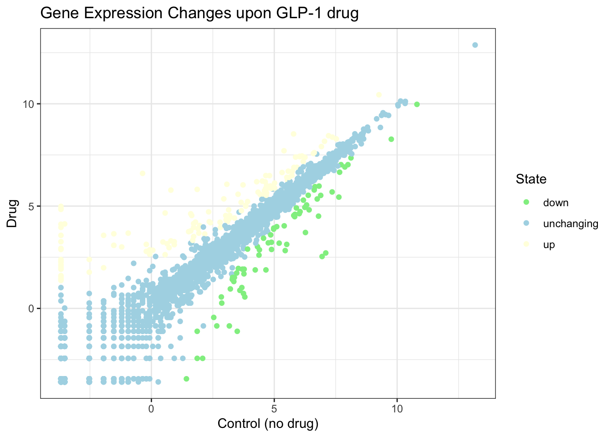

head(cars) speed dist
1 4 2
2 4 10
3 7 4
4 7 22
5 8 16
6 9 10There are lot’s of ways to make figures in R. These include so-called “base R” graphics (e.g. plot()) and tones of add-on packages like ggplot2.
For example here we make the same plot with both:
head(cars) speed dist
1 4 2
2 4 10
3 7 4
4 7 22
5 8 16
6 9 10plot(cars)
First I need to install the package with the command install.package().
N.B. We never run an install cmd in a quarto code chunk or we will end up re-installing packages many many times - which is not what we want!
Every time we want to use one of these “add-on” packages we need to load it up in R with the library() function:
library(ggplot2)ggplot(cars)
Every ggplot needs at least 3 things:
ggplot(cars) +
aes(x=speed, y=dist) +
geom_point()
Add a line to better show relationship between speed and dist
p <- ggplot(cars) +
aes(x=speed, y=dist) +
geom_point() +
geom_smooth(method="lm", se=FALSE) +
labs(
title="Stopping distance of old cars",
subtitle = "Data from the `cars` object",
x="Speed (mph)",
y="Distance (ft)"
)
p`geom_smooth()` using formula = 'y ~ x'
render it out p
p + theme_bw()`geom_smooth()` using formula = 'y ~ x'
We can read the input data from the class website
url <- "https://bioboot.github.io/bimm143_S20/class-material/up_down_expression.txt"
genes <- read.delim(url)
head(genes) Gene Condition1 Condition2 State
1 A4GNT -3.6808610 -3.4401355 unchanging
2 AAAS 4.5479580 4.3864126 unchanging
3 AASDH 3.7190695 3.4787276 unchanging
4 AATF 5.0784720 5.0151916 unchanging
5 AATK 0.4711421 0.5598642 unchanging
6 AB015752.4 -3.6808610 -3.5921390 unchangingtable( genes$State )
down unchanging up
72 4997 127 A first version plot
ggplot(genes) +
aes(Condition1, Condition2)+
geom_point()
genes$State [1] "unchanging" "unchanging" "unchanging" "unchanging" "unchanging"
[6] "unchanging" "unchanging" "unchanging" "unchanging" "up"
[11] "up" "unchanging" "unchanging" "unchanging" "unchanging"
[16] "unchanging" "unchanging" "unchanging" "unchanging" "unchanging"
[21] "unchanging" "unchanging" "unchanging" "unchanging" "unchanging"
[26] "unchanging" "unchanging" "unchanging" "unchanging" "unchanging"
[31] "unchanging" "unchanging" "unchanging" "unchanging" "unchanging"
[36] "unchanging" "unchanging" "unchanging" "unchanging" "unchanging"
[41] "unchanging" "unchanging" "unchanging" "unchanging" "unchanging"
[46] "unchanging" "unchanging" "unchanging" "unchanging" "unchanging"
[51] "unchanging" "unchanging" "unchanging" "unchanging" "unchanging"
[56] "unchanging" "unchanging" "unchanging" "unchanging" "unchanging"
[61] "unchanging" "unchanging" "unchanging" "unchanging" "unchanging"
[66] "unchanging" "unchanging" "unchanging" "unchanging" "unchanging"
[71] "unchanging" "unchanging" "unchanging" "unchanging" "unchanging"
[76] "unchanging" "unchanging" "unchanging" "unchanging" "unchanging"
[81] "unchanging" "unchanging" "unchanging" "unchanging" "unchanging"
[86] "unchanging" "unchanging" "unchanging" "unchanging" "unchanging"
[91] "unchanging" "unchanging" "unchanging" "unchanging" "unchanging"
[96] "unchanging" "unchanging" "unchanging" "unchanging" "unchanging"
[101] "unchanging" "unchanging" "unchanging" "unchanging" "unchanging"
[106] "unchanging" "unchanging" "unchanging" "unchanging" "unchanging"
[111] "unchanging" "unchanging" "unchanging" "unchanging" "unchanging"
[116] "unchanging" "unchanging" "unchanging" "unchanging" "unchanging"
[121] "unchanging" "unchanging" "unchanging" "unchanging" "unchanging"
[126] "unchanging" "unchanging" "unchanging" "unchanging" "unchanging"
[131] "unchanging" "unchanging" "unchanging" "unchanging" "unchanging"
[136] "unchanging" "unchanging" "unchanging" "unchanging" "unchanging"
[141] "unchanging" "unchanging" "unchanging" "unchanging" "unchanging"
[146] "unchanging" "unchanging" "unchanging" "unchanging" "unchanging"
[151] "unchanging" "unchanging" "unchanging" "unchanging" "unchanging"
[156] "unchanging" "unchanging" "unchanging" "unchanging" "unchanging"
[161] "unchanging" "unchanging" "unchanging" "unchanging" "unchanging"
[166] "unchanging" "unchanging" "unchanging" "unchanging" "unchanging"
[171] "unchanging" "unchanging" "unchanging" "unchanging" "unchanging"
[176] "unchanging" "unchanging" "unchanging" "unchanging" "unchanging"
[181] "unchanging" "unchanging" "unchanging" "unchanging" "unchanging"
[186] "unchanging" "unchanging" "unchanging" "unchanging" "unchanging"
[191] "unchanging" "unchanging" "unchanging" "unchanging" "unchanging"
[196] "unchanging" "unchanging" "unchanging" "unchanging" "unchanging"
[201] "unchanging" "unchanging" "unchanging" "unchanging" "unchanging"
[206] "unchanging" "unchanging" "unchanging" "unchanging" "unchanging"
[211] "unchanging" "unchanging" "unchanging" "unchanging" "unchanging"
[216] "unchanging" "unchanging" "unchanging" "unchanging" "unchanging"
[221] "unchanging" "unchanging" "unchanging" "unchanging" "unchanging"
[226] "unchanging" "unchanging" "unchanging" "unchanging" "unchanging"
[231] "unchanging" "unchanging" "unchanging" "unchanging" "unchanging"
[236] "unchanging" "unchanging" "unchanging" "unchanging" "unchanging"
[241] "unchanging" "unchanging" "unchanging" "unchanging" "unchanging"
[246] "unchanging" "unchanging" "unchanging" "unchanging" "unchanging"
[251] "unchanging" "unchanging" "unchanging" "unchanging" "unchanging"
[256] "unchanging" "unchanging" "unchanging" "unchanging" "unchanging"
[261] "unchanging" "unchanging" "unchanging" "unchanging" "unchanging"
[266] "unchanging" "unchanging" "unchanging" "unchanging" "unchanging"
[271] "unchanging" "unchanging" "unchanging" "unchanging" "unchanging"
[276] "unchanging" "unchanging" "unchanging" "unchanging" "unchanging"
[281] "unchanging" "unchanging" "unchanging" "unchanging" "unchanging"
[286] "unchanging" "unchanging" "unchanging" "unchanging" "unchanging"
[291] "unchanging" "unchanging" "unchanging" "unchanging" "unchanging"
[296] "unchanging" "unchanging" "unchanging" "unchanging" "unchanging"
[301] "unchanging" "unchanging" "unchanging" "unchanging" "unchanging"
[306] "unchanging" "unchanging" "unchanging" "unchanging" "unchanging"
[311] "unchanging" "unchanging" "unchanging" "unchanging" "unchanging"
[316] "unchanging" "unchanging" "unchanging" "unchanging" "unchanging"
[321] "unchanging" "unchanging" "unchanging" "unchanging" "unchanging"
[326] "unchanging" "unchanging" "unchanging" "unchanging" "unchanging"
[331] "unchanging" "unchanging" "unchanging" "unchanging" "unchanging"
[336] "unchanging" "unchanging" "unchanging" "unchanging" "unchanging"
[341] "unchanging" "unchanging" "unchanging" "unchanging" "unchanging"
[346] "unchanging" "unchanging" "unchanging" "unchanging" "unchanging"
[351] "unchanging" "unchanging" "unchanging" "unchanging" "unchanging"
[356] "unchanging" "unchanging" "unchanging" "unchanging" "unchanging"
[361] "unchanging" "unchanging" "unchanging" "unchanging" "unchanging"
[366] "unchanging" "unchanging" "unchanging" "unchanging" "unchanging"
[371] "unchanging" "unchanging" "unchanging" "unchanging" "unchanging"
[376] "unchanging" "unchanging" "down" "unchanging" "unchanging"
[381] "unchanging" "unchanging" "unchanging" "unchanging" "unchanging"
[386] "unchanging" "unchanging" "unchanging" "unchanging" "unchanging"
[391] "unchanging" "unchanging" "unchanging" "unchanging" "unchanging"
[396] "down" "unchanging" "unchanging" "unchanging" "unchanging"
[401] "unchanging" "unchanging" "unchanging" "unchanging" "unchanging"
[406] "unchanging" "unchanging" "unchanging" "unchanging" "unchanging"
[411] "unchanging" "unchanging" "unchanging" "unchanging" "unchanging"
[416] "unchanging" "unchanging" "unchanging" "unchanging" "up"
[421] "up" "unchanging" "unchanging" "unchanging" "unchanging"
[426] "unchanging" "unchanging" "unchanging" "unchanging" "unchanging"
[431] "unchanging" "unchanging" "unchanging" "unchanging" "unchanging"
[436] "unchanging" "unchanging" "unchanging" "unchanging" "unchanging"
[441] "unchanging" "unchanging" "unchanging" "unchanging" "unchanging"
[446] "unchanging" "unchanging" "unchanging" "unchanging" "unchanging"
[451] "unchanging" "unchanging" "unchanging" "unchanging" "unchanging"
[456] "unchanging" "unchanging" "unchanging" "unchanging" "unchanging"
[461] "unchanging" "unchanging" "unchanging" "unchanging" "unchanging"
[466] "unchanging" "unchanging" "unchanging" "unchanging" "unchanging"
[471] "unchanging" "unchanging" "unchanging" "unchanging" "unchanging"
[476] "unchanging" "unchanging" "unchanging" "unchanging" "unchanging"
[481] "unchanging" "unchanging" "unchanging" "down" "unchanging"
[486] "unchanging" "unchanging" "unchanging" "unchanging" "unchanging"
[491] "unchanging" "unchanging" "unchanging" "unchanging" "unchanging"
[496] "up" "unchanging" "unchanging" "unchanging" "up"
[501] "unchanging" "unchanging" "up" "unchanging" "unchanging"
[506] "unchanging" "unchanging" "unchanging" "unchanging" "unchanging"
[511] "unchanging" "unchanging" "unchanging" "unchanging" "unchanging"
[516] "unchanging" "unchanging" "unchanging" "unchanging" "unchanging"
[521] "unchanging" "unchanging" "unchanging" "down" "up"
[526] "unchanging" "unchanging" "unchanging" "unchanging" "unchanging"
[531] "unchanging" "unchanging" "unchanging" "unchanging" "unchanging"
[536] "unchanging" "unchanging" "unchanging" "unchanging" "unchanging"
[541] "unchanging" "unchanging" "unchanging" "unchanging" "unchanging"
[546] "unchanging" "unchanging" "unchanging" "unchanging" "unchanging"
[551] "unchanging" "unchanging" "unchanging" "unchanging" "unchanging"
[556] "unchanging" "unchanging" "unchanging" "unchanging" "unchanging"
[561] "unchanging" "unchanging" "unchanging" "unchanging" "unchanging"
[566] "unchanging" "unchanging" "unchanging" "unchanging" "unchanging"
[571] "unchanging" "unchanging" "unchanging" "unchanging" "unchanging"
[576] "unchanging" "unchanging" "unchanging" "unchanging" "unchanging"
[581] "unchanging" "unchanging" "unchanging" "unchanging" "unchanging"
[586] "unchanging" "unchanging" "unchanging" "unchanging" "unchanging"
[591] "unchanging" "unchanging" "unchanging" "unchanging" "unchanging"
[596] "unchanging" "unchanging" "unchanging" "unchanging" "unchanging"
[601] "unchanging" "unchanging" "unchanging" "unchanging" "unchanging"
[606] "unchanging" "unchanging" "unchanging" "unchanging" "unchanging"
[611] "unchanging" "unchanging" "unchanging" "unchanging" "unchanging"
[616] "unchanging" "unchanging" "unchanging" "unchanging" "unchanging"
[621] "unchanging" "unchanging" "unchanging" "unchanging" "unchanging"
[626] "unchanging" "unchanging" "unchanging" "unchanging" "unchanging"
[631] "unchanging" "down" "unchanging" "unchanging" "unchanging"
[636] "unchanging" "unchanging" "unchanging" "unchanging" "unchanging"
[641] "unchanging" "unchanging" "unchanging" "unchanging" "unchanging"
[646] "unchanging" "unchanging" "unchanging" "unchanging" "unchanging"
[651] "unchanging" "unchanging" "unchanging" "unchanging" "unchanging"
[656] "unchanging" "unchanging" "unchanging" "unchanging" "unchanging"
[661] "unchanging" "unchanging" "unchanging" "unchanging" "unchanging"
[666] "unchanging" "down" "down" "unchanging" "unchanging"
[671] "unchanging" "unchanging" "unchanging" "unchanging" "unchanging"
[676] "unchanging" "unchanging" "unchanging" "unchanging" "unchanging"
[681] "unchanging" "unchanging" "unchanging" "unchanging" "unchanging"
[686] "unchanging" "unchanging" "unchanging" "unchanging" "unchanging"
[691] "unchanging" "unchanging" "unchanging" "unchanging" "unchanging"
[696] "unchanging" "unchanging" "unchanging" "unchanging" "unchanging"
[701] "unchanging" "unchanging" "unchanging" "unchanging" "unchanging"
[706] "unchanging" "unchanging" "unchanging" "unchanging" "unchanging"
[711] "unchanging" "unchanging" "up" "unchanging" "unchanging"
[716] "unchanging" "unchanging" "down" "unchanging" "unchanging"
[721] "unchanging" "unchanging" "unchanging" "unchanging" "unchanging"
[726] "unchanging" "unchanging" "unchanging" "unchanging" "unchanging"
[731] "unchanging" "down" "up" "unchanging" "unchanging"
[736] "up" "unchanging" "unchanging" "unchanging" "unchanging"
[741] "unchanging" "unchanging" "unchanging" "unchanging" "unchanging"
[746] "unchanging" "unchanging" "unchanging" "unchanging" "unchanging"
[751] "unchanging" "unchanging" "unchanging" "unchanging" "unchanging"
[756] "unchanging" "unchanging" "unchanging" "unchanging" "unchanging"
[761] "unchanging" "unchanging" "unchanging" "unchanging" "unchanging"
[766] "unchanging" "unchanging" "unchanging" "unchanging" "down"
[771] "unchanging" "unchanging" "unchanging" "unchanging" "unchanging"
[776] "unchanging" "unchanging" "unchanging" "unchanging" "unchanging"
[781] "unchanging" "unchanging" "unchanging" "unchanging" "unchanging"
[786] "unchanging" "unchanging" "unchanging" "unchanging" "unchanging"
[791] "unchanging" "unchanging" "unchanging" "unchanging" "down"
[796] "unchanging" "unchanging" "unchanging" "unchanging" "unchanging"
[801] "unchanging" "unchanging" "unchanging" "unchanging" "unchanging"
[806] "unchanging" "unchanging" "unchanging" "unchanging" "unchanging"
[811] "unchanging" "unchanging" "unchanging" "unchanging" "unchanging"
[816] "unchanging" "unchanging" "unchanging" "unchanging" "unchanging"
[821] "unchanging" "unchanging" "unchanging" "unchanging" "unchanging"
[826] "unchanging" "unchanging" "unchanging" "unchanging" "unchanging"
[831] "unchanging" "unchanging" "unchanging" "unchanging" "unchanging"
[836] "unchanging" "unchanging" "unchanging" "unchanging" "unchanging"
[841] "unchanging" "unchanging" "unchanging" "unchanging" "unchanging"
[846] "unchanging" "unchanging" "unchanging" "unchanging" "unchanging"
[851] "unchanging" "unchanging" "unchanging" "unchanging" "unchanging"
[856] "unchanging" "unchanging" "unchanging" "unchanging" "unchanging"
[861] "unchanging" "unchanging" "unchanging" "unchanging" "unchanging"
[866] "unchanging" "unchanging" "unchanging" "unchanging" "unchanging"
[871] "unchanging" "unchanging" "unchanging" "unchanging" "unchanging"
[876] "unchanging" "unchanging" "unchanging" "unchanging" "unchanging"
[881] "unchanging" "unchanging" "unchanging" "unchanging" "unchanging"
[886] "unchanging" "unchanging" "unchanging" "unchanging" "unchanging"
[891] "unchanging" "unchanging" "unchanging" "unchanging" "unchanging"
[896] "unchanging" "unchanging" "unchanging" "unchanging" "unchanging"
[901] "unchanging" "unchanging" "unchanging" "unchanging" "unchanging"
[906] "unchanging" "unchanging" "unchanging" "unchanging" "unchanging"
[911] "unchanging" "unchanging" "unchanging" "unchanging" "unchanging"
[916] "unchanging" "unchanging" "unchanging" "unchanging" "unchanging"
[921] "unchanging" "unchanging" "unchanging" "unchanging" "unchanging"
[926] "unchanging" "unchanging" "unchanging" "unchanging" "unchanging"
[931] "unchanging" "unchanging" "unchanging" "unchanging" "unchanging"
[936] "unchanging" "unchanging" "unchanging" "unchanging" "unchanging"
[941] "unchanging" "unchanging" "unchanging" "unchanging" "unchanging"
[946] "unchanging" "unchanging" "unchanging" "up" "unchanging"
[951] "unchanging" "unchanging" "unchanging" "unchanging" "unchanging"
[956] "unchanging" "unchanging" "unchanging" "unchanging" "unchanging"
[961] "unchanging" "unchanging" "unchanging" "unchanging" "unchanging"
[966] "unchanging" "unchanging" "unchanging" "unchanging" "up"
[971] "unchanging" "unchanging" "unchanging" "unchanging" "unchanging"
[976] "down" "unchanging" "unchanging" "unchanging" "unchanging"
[981] "unchanging" "unchanging" "unchanging" "unchanging" "unchanging"
[986] "unchanging" "unchanging" "unchanging" "unchanging" "unchanging"
[991] "unchanging" "unchanging" "unchanging" "unchanging" "unchanging"
[996] "unchanging" "unchanging" "unchanging" "unchanging" "unchanging"
[1001] "unchanging" "unchanging" "unchanging" "unchanging" "unchanging"
[1006] "unchanging" "unchanging" "unchanging" "unchanging" "unchanging"
[1011] "unchanging" "unchanging" "unchanging" "unchanging" "unchanging"
[1016] "unchanging" "unchanging" "unchanging" "unchanging" "unchanging"
[1021] "unchanging" "unchanging" "unchanging" "unchanging" "unchanging"
[1026] "unchanging" "unchanging" "unchanging" "unchanging" "unchanging"
[1031] "unchanging" "unchanging" "unchanging" "unchanging" "unchanging"
[1036] "unchanging" "unchanging" "unchanging" "unchanging" "unchanging"
[1041] "unchanging" "unchanging" "unchanging" "unchanging" "unchanging"
[1046] "unchanging" "down" "unchanging" "unchanging" "up"
[1051] "unchanging" "unchanging" "unchanging" "unchanging" "unchanging"
[1056] "unchanging" "up" "unchanging" "unchanging" "unchanging"
[1061] "unchanging" "up" "unchanging" "unchanging" "unchanging"
[1066] "unchanging" "up" "up" "unchanging" "unchanging"
[1071] "down" "unchanging" "unchanging" "unchanging" "unchanging"
[1076] "unchanging" "unchanging" "unchanging" "unchanging" "unchanging"
[1081] "down" "unchanging" "unchanging" "unchanging" "unchanging"
[1086] "unchanging" "unchanging" "unchanging" "unchanging" "unchanging"
[1091] "unchanging" "unchanging" "unchanging" "unchanging" "unchanging"
[1096] "unchanging" "unchanging" "unchanging" "unchanging" "unchanging"
[1101] "unchanging" "unchanging" "unchanging" "unchanging" "unchanging"
[1106] "unchanging" "unchanging" "down" "unchanging" "unchanging"
[1111] "unchanging" "unchanging" "unchanging" "unchanging" "unchanging"
[1116] "unchanging" "unchanging" "unchanging" "unchanging" "unchanging"
[1121] "unchanging" "unchanging" "unchanging" "unchanging" "unchanging"
[1126] "unchanging" "down" "unchanging" "unchanging" "unchanging"
[1131] "unchanging" "unchanging" "unchanging" "up" "unchanging"
[1136] "unchanging" "unchanging" "unchanging" "unchanging" "unchanging"
[1141] "unchanging" "unchanging" "unchanging" "unchanging" "unchanging"
[1146] "unchanging" "unchanging" "unchanging" "unchanging" "down"
[1151] "up" "down" "down" "unchanging" "unchanging"
[1156] "down" "unchanging" "up" "unchanging" "unchanging"
[1161] "unchanging" "unchanging" "unchanging" "unchanging" "unchanging"
[1166] "unchanging" "unchanging" "up" "unchanging" "unchanging"
[1171] "unchanging" "unchanging" "unchanging" "unchanging" "unchanging"
[1176] "unchanging" "unchanging" "unchanging" "unchanging" "unchanging"
[1181] "unchanging" "unchanging" "up" "unchanging" "unchanging"
[1186] "up" "unchanging" "unchanging" "unchanging" "unchanging"
[1191] "unchanging" "unchanging" "unchanging" "unchanging" "unchanging"
[1196] "unchanging" "unchanging" "unchanging" "unchanging" "unchanging"
[1201] "unchanging" "unchanging" "unchanging" "unchanging" "unchanging"
[1206] "unchanging" "unchanging" "unchanging" "unchanging" "unchanging"
[1211] "unchanging" "unchanging" "unchanging" "unchanging" "unchanging"
[1216] "unchanging" "unchanging" "unchanging" "unchanging" "unchanging"
[1221] "unchanging" "unchanging" "unchanging" "unchanging" "unchanging"
[1226] "unchanging" "unchanging" "unchanging" "unchanging" "unchanging"
[1231] "unchanging" "unchanging" "unchanging" "unchanging" "unchanging"
[1236] "unchanging" "unchanging" "unchanging" "unchanging" "unchanging"
[1241] "unchanging" "unchanging" "unchanging" "unchanging" "unchanging"
[1246] "unchanging" "unchanging" "unchanging" "unchanging" "unchanging"
[1251] "unchanging" "unchanging" "unchanging" "unchanging" "unchanging"
[1256] "unchanging" "unchanging" "unchanging" "unchanging" "unchanging"
[1261] "unchanging" "unchanging" "unchanging" "unchanging" "unchanging"
[1266] "unchanging" "unchanging" "unchanging" "unchanging" "unchanging"
[1271] "unchanging" "unchanging" "unchanging" "up" "unchanging"
[1276] "unchanging" "unchanging" "unchanging" "unchanging" "unchanging"
[1281] "unchanging" "unchanging" "unchanging" "unchanging" "unchanging"
[1286] "unchanging" "unchanging" "unchanging" "unchanging" "unchanging"
[1291] "unchanging" "unchanging" "unchanging" "unchanging" "unchanging"
[1296] "unchanging" "unchanging" "unchanging" "unchanging" "unchanging"
[1301] "unchanging" "unchanging" "unchanging" "unchanging" "unchanging"
[1306] "unchanging" "unchanging" "unchanging" "unchanging" "unchanging"
[1311] "unchanging" "unchanging" "unchanging" "unchanging" "unchanging"
[1316] "unchanging" "unchanging" "unchanging" "unchanging" "unchanging"
[1321] "unchanging" "unchanging" "unchanging" "unchanging" "unchanging"
[1326] "unchanging" "unchanging" "unchanging" "unchanging" "unchanging"
[1331] "unchanging" "unchanging" "up" "unchanging" "unchanging"
[1336] "unchanging" "unchanging" "unchanging" "unchanging" "unchanging"
[1341] "unchanging" "unchanging" "unchanging" "unchanging" "unchanging"
[1346] "unchanging" "unchanging" "unchanging" "unchanging" "unchanging"
[1351] "unchanging" "unchanging" "unchanging" "unchanging" "unchanging"
[1356] "up" "unchanging" "up" "unchanging" "unchanging"
[1361] "unchanging" "unchanging" "unchanging" "up" "unchanging"
[1366] "unchanging" "unchanging" "unchanging" "unchanging" "unchanging"
[1371] "unchanging" "unchanging" "unchanging" "unchanging" "unchanging"
[1376] "unchanging" "unchanging" "unchanging" "unchanging" "unchanging"
[1381] "unchanging" "unchanging" "unchanging" "unchanging" "unchanging"
[1386] "unchanging" "unchanging" "unchanging" "unchanging" "unchanging"
[1391] "unchanging" "unchanging" "unchanging" "unchanging" "unchanging"
[1396] "unchanging" "unchanging" "unchanging" "unchanging" "unchanging"
[1401] "unchanging" "unchanging" "unchanging" "unchanging" "unchanging"
[1406] "unchanging" "unchanging" "unchanging" "unchanging" "unchanging"
[1411] "unchanging" "unchanging" "unchanging" "unchanging" "unchanging"
[1416] "unchanging" "unchanging" "unchanging" "unchanging" "unchanging"
[1421] "unchanging" "unchanging" "unchanging" "unchanging" "unchanging"
[1426] "unchanging" "unchanging" "unchanging" "unchanging" "unchanging"
[1431] "unchanging" "unchanging" "unchanging" "unchanging" "unchanging"
[1436] "unchanging" "unchanging" "unchanging" "unchanging" "unchanging"
[1441] "unchanging" "down" "unchanging" "unchanging" "unchanging"
[1446] "unchanging" "unchanging" "unchanging" "unchanging" "unchanging"
[1451] "unchanging" "unchanging" "unchanging" "unchanging" "unchanging"
[1456] "unchanging" "unchanging" "unchanging" "unchanging" "unchanging"
[1461] "up" "up" "unchanging" "unchanging" "unchanging"
[1466] "unchanging" "unchanging" "unchanging" "unchanging" "unchanging"
[1471] "unchanging" "unchanging" "unchanging" "unchanging" "unchanging"
[1476] "unchanging" "unchanging" "unchanging" "unchanging" "unchanging"
[1481] "unchanging" "unchanging" "unchanging" "unchanging" "unchanging"
[1486] "unchanging" "unchanging" "unchanging" "unchanging" "unchanging"
[1491] "unchanging" "up" "down" "unchanging" "unchanging"
[1496] "unchanging" "unchanging" "unchanging" "unchanging" "unchanging"
[1501] "down" "down" "unchanging" "unchanging" "unchanging"
[1506] "unchanging" "unchanging" "unchanging" "unchanging" "unchanging"
[1511] "unchanging" "unchanging" "unchanging" "unchanging" "unchanging"
[1516] "unchanging" "unchanging" "unchanging" "unchanging" "unchanging"
[1521] "unchanging" "unchanging" "up" "unchanging" "unchanging"
[1526] "unchanging" "unchanging" "unchanging" "unchanging" "unchanging"
[1531] "unchanging" "unchanging" "unchanging" "unchanging" "unchanging"
[1536] "up" "unchanging" "unchanging" "unchanging" "unchanging"
[1541] "unchanging" "unchanging" "unchanging" "unchanging" "unchanging"
[1546] "up" "unchanging" "unchanging" "unchanging" "unchanging"
[1551] "unchanging" "unchanging" "unchanging" "unchanging" "unchanging"
[1556] "unchanging" "unchanging" "unchanging" "unchanging" "unchanging"
[1561] "unchanging" "unchanging" "unchanging" "unchanging" "unchanging"
[1566] "unchanging" "unchanging" "unchanging" "unchanging" "unchanging"
[1571] "unchanging" "unchanging" "unchanging" "unchanging" "unchanging"
[1576] "unchanging" "unchanging" "unchanging" "unchanging" "unchanging"
[1581] "unchanging" "unchanging" "unchanging" "unchanging" "unchanging"
[1586] "unchanging" "unchanging" "unchanging" "unchanging" "unchanging"
[1591] "unchanging" "unchanging" "unchanging" "unchanging" "unchanging"
[1596] "unchanging" "unchanging" "unchanging" "unchanging" "unchanging"
[1601] "unchanging" "unchanging" "unchanging" "unchanging" "unchanging"
[1606] "unchanging" "unchanging" "unchanging" "unchanging" "unchanging"
[1611] "unchanging" "unchanging" "unchanging" "unchanging" "unchanging"
[1616] "unchanging" "unchanging" "unchanging" "unchanging" "unchanging"
[1621] "unchanging" "unchanging" "unchanging" "unchanging" "unchanging"
[1626] "unchanging" "unchanging" "unchanging" "unchanging" "unchanging"
[1631] "unchanging" "unchanging" "unchanging" "unchanging" "unchanging"
[1636] "unchanging" "unchanging" "unchanging" "unchanging" "unchanging"
[1641] "unchanging" "unchanging" "unchanging" "unchanging" "unchanging"
[1646] "unchanging" "unchanging" "unchanging" "unchanging" "unchanging"
[1651] "unchanging" "unchanging" "unchanging" "unchanging" "unchanging"
[1656] "unchanging" "unchanging" "unchanging" "up" "unchanging"
[1661] "up" "unchanging" "unchanging" "unchanging" "unchanging"
[1666] "unchanging" "unchanging" "unchanging" "unchanging" "unchanging"
[1671] "unchanging" "unchanging" "unchanging" "unchanging" "unchanging"
[1676] "unchanging" "unchanging" "unchanging" "unchanging" "unchanging"
[1681] "unchanging" "unchanging" "unchanging" "unchanging" "unchanging"
[1686] "unchanging" "unchanging" "unchanging" "unchanging" "unchanging"
[1691] "up" "unchanging" "unchanging" "unchanging" "unchanging"
[1696] "unchanging" "unchanging" "unchanging" "unchanging" "unchanging"
[1701] "unchanging" "unchanging" "unchanging" "unchanging" "up"
[1706] "unchanging" "unchanging" "unchanging" "unchanging" "unchanging"
[1711] "unchanging" "up" "unchanging" "unchanging" "unchanging"
[1716] "unchanging" "unchanging" "unchanging" "unchanging" "unchanging"
[1721] "unchanging" "unchanging" "down" "unchanging" "unchanging"
[1726] "unchanging" "unchanging" "unchanging" "unchanging" "unchanging"
[1731] "up" "unchanging" "unchanging" "unchanging" "unchanging"
[1736] "unchanging" "unchanging" "unchanging" "unchanging" "unchanging"
[1741] "unchanging" "unchanging" "unchanging" "unchanging" "unchanging"
[1746] "unchanging" "unchanging" "unchanging" "unchanging" "unchanging"
[1751] "unchanging" "unchanging" "unchanging" "up" "unchanging"
[1756] "unchanging" "unchanging" "unchanging" "down" "down"
[1761] "unchanging" "unchanging" "down" "unchanging" "unchanging"
[1766] "unchanging" "unchanging" "unchanging" "unchanging" "unchanging"
[1771] "unchanging" "up" "unchanging" "unchanging" "unchanging"
[1776] "unchanging" "unchanging" "unchanging" "unchanging" "unchanging"
[1781] "unchanging" "unchanging" "unchanging" "unchanging" "unchanging"
[1786] "unchanging" "unchanging" "up" "unchanging" "unchanging"
[1791] "unchanging" "unchanging" "unchanging" "unchanging" "unchanging"
[1796] "unchanging" "unchanging" "unchanging" "unchanging" "unchanging"
[1801] "unchanging" "unchanging" "unchanging" "unchanging" "unchanging"
[1806] "unchanging" "unchanging" "unchanging" "unchanging" "unchanging"
[1811] "unchanging" "unchanging" "unchanging" "unchanging" "unchanging"
[1816] "unchanging" "unchanging" "unchanging" "up" "unchanging"
[1821] "up" "up" "unchanging" "unchanging" "unchanging"
[1826] "unchanging" "unchanging" "unchanging" "unchanging" "unchanging"
[1831] "unchanging" "unchanging" "unchanging" "up" "unchanging"
[1836] "unchanging" "unchanging" "unchanging" "unchanging" "unchanging"
[1841] "unchanging" "unchanging" "unchanging" "unchanging" "unchanging"
[1846] "unchanging" "unchanging" "unchanging" "unchanging" "unchanging"
[1851] "unchanging" "unchanging" "unchanging" "unchanging" "unchanging"
[1856] "unchanging" "unchanging" "unchanging" "unchanging" "unchanging"
[1861] "unchanging" "unchanging" "unchanging" "unchanging" "unchanging"
[1866] "unchanging" "unchanging" "unchanging" "up" "unchanging"
[1871] "unchanging" "unchanging" "unchanging" "unchanging" "up"
[1876] "unchanging" "unchanging" "unchanging" "unchanging" "unchanging"
[1881] "unchanging" "unchanging" "unchanging" "unchanging" "unchanging"
[1886] "unchanging" "unchanging" "unchanging" "unchanging" "unchanging"
[1891] "unchanging" "unchanging" "unchanging" "unchanging" "unchanging"
[1896] "unchanging" "unchanging" "unchanging" "unchanging" "unchanging"
[1901] "unchanging" "unchanging" "unchanging" "unchanging" "unchanging"
[1906] "unchanging" "unchanging" "unchanging" "unchanging" "unchanging"
[1911] "unchanging" "unchanging" "unchanging" "unchanging" "unchanging"
[1916] "unchanging" "unchanging" "unchanging" "unchanging" "unchanging"
[1921] "unchanging" "up" "unchanging" "unchanging" "up"
[1926] "up" "unchanging" "unchanging" "unchanging" "unchanging"
[1931] "unchanging" "unchanging" "unchanging" "unchanging" "unchanging"
[1936] "up" "unchanging" "unchanging" "unchanging" "unchanging"
[1941] "unchanging" "unchanging" "unchanging" "unchanging" "unchanging"
[1946] "unchanging" "unchanging" "unchanging" "unchanging" "unchanging"
[1951] "unchanging" "unchanging" "unchanging" "unchanging" "unchanging"
[1956] "unchanging" "unchanging" "unchanging" "unchanging" "unchanging"
[1961] "unchanging" "unchanging" "unchanging" "unchanging" "unchanging"
[1966] "unchanging" "unchanging" "up" "unchanging" "unchanging"
[1971] "unchanging" "unchanging" "unchanging" "unchanging" "unchanging"
[1976] "unchanging" "unchanging" "unchanging" "unchanging" "unchanging"
[1981] "up" "unchanging" "unchanging" "unchanging" "unchanging"
[1986] "unchanging" "unchanging" "unchanging" "unchanging" "unchanging"
[1991] "unchanging" "unchanging" "unchanging" "unchanging" "down"
[1996] "up" "up" "unchanging" "unchanging" "unchanging"
[2001] "unchanging" "unchanging" "unchanging" "unchanging" "unchanging"
[2006] "unchanging" "unchanging" "unchanging" "unchanging" "unchanging"
[2011] "unchanging" "unchanging" "unchanging" "unchanging" "unchanging"
[2016] "unchanging" "unchanging" "unchanging" "unchanging" "unchanging"
[2021] "unchanging" "unchanging" "unchanging" "unchanging" "unchanging"
[2026] "unchanging" "unchanging" "unchanging" "unchanging" "unchanging"
[2031] "unchanging" "unchanging" "unchanging" "unchanging" "unchanging"
[2036] "unchanging" "unchanging" "unchanging" "unchanging" "unchanging"
[2041] "unchanging" "unchanging" "unchanging" "unchanging" "unchanging"
[2046] "unchanging" "unchanging" "unchanging" "unchanging" "unchanging"
[2051] "unchanging" "unchanging" "unchanging" "unchanging" "unchanging"
[2056] "unchanging" "unchanging" "unchanging" "unchanging" "unchanging"
[2061] "unchanging" "unchanging" "unchanging" "unchanging" "unchanging"
[2066] "unchanging" "unchanging" "unchanging" "unchanging" "unchanging"
[2071] "unchanging" "unchanging" "unchanging" "unchanging" "unchanging"
[2076] "unchanging" "unchanging" "unchanging" "unchanging" "unchanging"
[2081] "unchanging" "unchanging" "unchanging" "unchanging" "unchanging"
[2086] "up" "unchanging" "unchanging" "unchanging" "unchanging"
[2091] "unchanging" "unchanging" "unchanging" "unchanging" "unchanging"
[2096] "unchanging" "unchanging" "unchanging" "unchanging" "unchanging"
[2101] "unchanging" "unchanging" "unchanging" "unchanging" "unchanging"
[2106] "unchanging" "unchanging" "unchanging" "unchanging" "unchanging"
[2111] "up" "unchanging" "unchanging" "unchanging" "unchanging"
[2116] "unchanging" "unchanging" "unchanging" "unchanging" "unchanging"
[2121] "unchanging" "unchanging" "unchanging" "up" "unchanging"
[2126] "unchanging" "unchanging" "unchanging" "unchanging" "unchanging"
[2131] "unchanging" "unchanging" "unchanging" "unchanging" "unchanging"
[2136] "unchanging" "unchanging" "unchanging" "unchanging" "unchanging"
[2141] "unchanging" "unchanging" "unchanging" "unchanging" "unchanging"
[2146] "unchanging" "unchanging" "unchanging" "unchanging" "unchanging"
[2151] "unchanging" "unchanging" "unchanging" "up" "unchanging"
[2156] "unchanging" "unchanging" "unchanging" "unchanging" "unchanging"
[2161] "unchanging" "unchanging" "unchanging" "unchanging" "unchanging"
[2166] "unchanging" "unchanging" "unchanging" "unchanging" "unchanging"
[2171] "up" "up" "unchanging" "unchanging" "unchanging"
[2176] "unchanging" "down" "unchanging" "unchanging" "unchanging"
[2181] "unchanging" "unchanging" "unchanging" "unchanging" "unchanging"
[2186] "unchanging" "unchanging" "unchanging" "unchanging" "unchanging"
[2191] "unchanging" "unchanging" "unchanging" "unchanging" "unchanging"
[2196] "unchanging" "unchanging" "unchanging" "unchanging" "unchanging"
[2201] "unchanging" "unchanging" "unchanging" "unchanging" "unchanging"
[2206] "unchanging" "unchanging" "unchanging" "unchanging" "unchanging"
[2211] "unchanging" "unchanging" "unchanging" "unchanging" "unchanging"
[2216] "unchanging" "unchanging" "unchanging" "unchanging" "unchanging"
[2221] "unchanging" "unchanging" "unchanging" "unchanging" "unchanging"
[2226] "unchanging" "unchanging" "unchanging" "unchanging" "unchanging"
[2231] "unchanging" "unchanging" "unchanging" "unchanging" "unchanging"
[2236] "unchanging" "unchanging" "unchanging" "unchanging" "unchanging"
[2241] "unchanging" "unchanging" "unchanging" "unchanging" "unchanging"
[2246] "unchanging" "unchanging" "unchanging" "unchanging" "unchanging"
[2251] "up" "unchanging" "up" "unchanging" "unchanging"
[2256] "unchanging" "unchanging" "unchanging" "unchanging" "unchanging"
[2261] "unchanging" "unchanging" "unchanging" "unchanging" "unchanging"
[2266] "unchanging" "unchanging" "unchanging" "unchanging" "unchanging"
[2271] "unchanging" "unchanging" "down" "unchanging" "unchanging"
[2276] "unchanging" "unchanging" "unchanging" "unchanging" "unchanging"
[2281] "unchanging" "unchanging" "unchanging" "unchanging" "unchanging"
[2286] "unchanging" "unchanging" "unchanging" "unchanging" "unchanging"
[2291] "unchanging" "unchanging" "unchanging" "unchanging" "unchanging"
[2296] "unchanging" "unchanging" "unchanging" "unchanging" "unchanging"
[2301] "unchanging" "unchanging" "unchanging" "unchanging" "unchanging"
[2306] "unchanging" "unchanging" "unchanging" "unchanging" "unchanging"
[2311] "unchanging" "unchanging" "unchanging" "unchanging" "unchanging"
[2316] "unchanging" "unchanging" "unchanging" "unchanging" "unchanging"
[2321] "unchanging" "unchanging" "unchanging" "unchanging" "unchanging"
[2326] "unchanging" "unchanging" "unchanging" "unchanging" "down"
[2331] "up" "up" "unchanging" "unchanging" "unchanging"
[2336] "unchanging" "unchanging" "unchanging" "unchanging" "unchanging"
[2341] "unchanging" "unchanging" "unchanging" "unchanging" "unchanging"
[2346] "unchanging" "unchanging" "unchanging" "unchanging" "unchanging"
[2351] "unchanging" "unchanging" "unchanging" "unchanging" "unchanging"
[2356] "unchanging" "unchanging" "unchanging" "unchanging" "unchanging"
[2361] "unchanging" "unchanging" "unchanging" "unchanging" "unchanging"
[2366] "unchanging" "unchanging" "unchanging" "unchanging" "unchanging"
[2371] "unchanging" "unchanging" "unchanging" "unchanging" "unchanging"
[2376] "unchanging" "unchanging" "unchanging" "unchanging" "unchanging"
[2381] "down" "unchanging" "unchanging" "unchanging" "unchanging"
[2386] "unchanging" "unchanging" "unchanging" "unchanging" "unchanging"
[2391] "up" "unchanging" "unchanging" "unchanging" "unchanging"
[2396] "unchanging" "unchanging" "unchanging" "unchanging" "unchanging"
[2401] "unchanging" "unchanging" "unchanging" "unchanging" "unchanging"
[2406] "unchanging" "unchanging" "unchanging" "unchanging" "unchanging"
[2411] "unchanging" "unchanging" "unchanging" "unchanging" "unchanging"
[2416] "unchanging" "unchanging" "unchanging" "unchanging" "unchanging"
[2421] "unchanging" "unchanging" "unchanging" "unchanging" "unchanging"
[2426] "unchanging" "unchanging" "unchanging" "unchanging" "unchanging"
[2431] "unchanging" "unchanging" "unchanging" "unchanging" "unchanging"
[2436] "unchanging" "unchanging" "unchanging" "unchanging" "unchanging"
[2441] "unchanging" "unchanging" "unchanging" "unchanging" "unchanging"
[2446] "unchanging" "unchanging" "unchanging" "unchanging" "unchanging"
[2451] "unchanging" "unchanging" "unchanging" "unchanging" "unchanging"
[2456] "unchanging" "up" "unchanging" "unchanging" "unchanging"
[2461] "unchanging" "unchanging" "unchanging" "unchanging" "unchanging"
[2466] "unchanging" "unchanging" "unchanging" "unchanging" "unchanging"
[2471] "up" "up" "unchanging" "unchanging" "up"
[2476] "down" "unchanging" "unchanging" "unchanging" "up"
[2481] "unchanging" "unchanging" "unchanging" "unchanging" "up"
[2486] "unchanging" "unchanging" "unchanging" "unchanging" "unchanging"
[2491] "unchanging" "up" "unchanging" "unchanging" "unchanging"
[2496] "unchanging" "unchanging" "unchanging" "unchanging" "unchanging"
[2501] "unchanging" "unchanging" "unchanging" "unchanging" "unchanging"
[2506] "unchanging" "unchanging" "unchanging" "unchanging" "unchanging"
[2511] "unchanging" "unchanging" "down" "unchanging" "unchanging"
[2516] "unchanging" "unchanging" "unchanging" "down" "unchanging"
[2521] "unchanging" "unchanging" "unchanging" "unchanging" "unchanging"
[2526] "unchanging" "unchanging" "unchanging" "unchanging" "unchanging"
[2531] "unchanging" "unchanging" "unchanging" "unchanging" "unchanging"
[2536] "unchanging" "up" "unchanging" "unchanging" "unchanging"
[2541] "unchanging" "unchanging" "unchanging" "unchanging" "unchanging"
[2546] "unchanging" "down" "unchanging" "unchanging" "unchanging"
[2551] "unchanging" "unchanging" "unchanging" "unchanging" "unchanging"
[2556] "unchanging" "unchanging" "unchanging" "down" "unchanging"
[2561] "unchanging" "unchanging" "unchanging" "unchanging" "unchanging"
[2566] "unchanging" "unchanging" "unchanging" "unchanging" "unchanging"
[2571] "unchanging" "unchanging" "unchanging" "unchanging" "unchanging"
[2576] "unchanging" "unchanging" "unchanging" "unchanging" "unchanging"
[2581] "down" "unchanging" "unchanging" "unchanging" "unchanging"
[2586] "unchanging" "unchanging" "unchanging" "unchanging" "unchanging"
[2591] "unchanging" "unchanging" "unchanging" "unchanging" "unchanging"
[2596] "unchanging" "unchanging" "unchanging" "unchanging" "unchanging"
[2601] "unchanging" "unchanging" "unchanging" "unchanging" "up"
[2606] "unchanging" "unchanging" "unchanging" "unchanging" "unchanging"
[2611] "unchanging" "unchanging" "unchanging" "unchanging" "unchanging"
[2616] "unchanging" "unchanging" "up" "unchanging" "unchanging"
[2621] "unchanging" "unchanging" "unchanging" "unchanging" "unchanging"
[2626] "unchanging" "unchanging" "unchanging" "unchanging" "unchanging"
[2631] "unchanging" "unchanging" "unchanging" "unchanging" "up"
[2636] "unchanging" "unchanging" "unchanging" "unchanging" "unchanging"
[2641] "unchanging" "unchanging" "unchanging" "unchanging" "unchanging"
[2646] "unchanging" "unchanging" "unchanging" "unchanging" "unchanging"
[2651] "unchanging" "unchanging" "unchanging" "unchanging" "unchanging"
[2656] "unchanging" "unchanging" "unchanging" "unchanging" "unchanging"
[2661] "unchanging" "unchanging" "unchanging" "unchanging" "unchanging"
[2666] "unchanging" "unchanging" "unchanging" "unchanging" "unchanging"
[2671] "unchanging" "unchanging" "unchanging" "unchanging" "unchanging"
[2676] "unchanging" "unchanging" "unchanging" "unchanging" "unchanging"
[2681] "unchanging" "unchanging" "unchanging" "up" "unchanging"
[2686] "unchanging" "unchanging" "unchanging" "unchanging" "unchanging"
[2691] "unchanging" "unchanging" "unchanging" "unchanging" "unchanging"
[2696] "unchanging" "unchanging" "unchanging" "unchanging" "unchanging"
[2701] "unchanging" "unchanging" "unchanging" "unchanging" "unchanging"
[2706] "unchanging" "unchanging" "unchanging" "unchanging" "unchanging"
[2711] "unchanging" "unchanging" "unchanging" "unchanging" "unchanging"
[2716] "unchanging" "unchanging" "unchanging" "unchanging" "unchanging"
[2721] "unchanging" "unchanging" "unchanging" "unchanging" "unchanging"
[2726] "unchanging" "unchanging" "unchanging" "unchanging" "unchanging"
[2731] "unchanging" "unchanging" "unchanging" "unchanging" "unchanging"
[2736] "unchanging" "unchanging" "unchanging" "unchanging" "unchanging"
[2741] "unchanging" "unchanging" "unchanging" "unchanging" "unchanging"
[2746] "unchanging" "unchanging" "unchanging" "unchanging" "unchanging"
[2751] "unchanging" "unchanging" "unchanging" "unchanging" "down"
[2756] "unchanging" "unchanging" "unchanging" "unchanging" "unchanging"
[2761] "unchanging" "unchanging" "unchanging" "unchanging" "unchanging"
[2766] "unchanging" "unchanging" "unchanging" "unchanging" "unchanging"
[2771] "unchanging" "unchanging" "down" "unchanging" "unchanging"
[2776] "down" "unchanging" "unchanging" "unchanging" "unchanging"
[2781] "unchanging" "unchanging" "up" "unchanging" "unchanging"
[2786] "unchanging" "unchanging" "unchanging" "unchanging" "unchanging"
[2791] "unchanging" "unchanging" "unchanging" "unchanging" "unchanging"
[2796] "up" "unchanging" "unchanging" "unchanging" "unchanging"
[2801] "unchanging" "unchanging" "unchanging" "unchanging" "unchanging"
[2806] "unchanging" "unchanging" "unchanging" "up" "unchanging"
[2811] "down" "unchanging" "unchanging" "unchanging" "unchanging"
[2816] "unchanging" "unchanging" "down" "unchanging" "up"
[2821] "unchanging" "unchanging" "unchanging" "unchanging" "unchanging"
[2826] "unchanging" "unchanging" "unchanging" "unchanging" "unchanging"
[2831] "unchanging" "unchanging" "unchanging" "unchanging" "unchanging"
[2836] "unchanging" "unchanging" "unchanging" "unchanging" "unchanging"
[2841] "unchanging" "unchanging" "unchanging" "unchanging" "unchanging"
[2846] "unchanging" "unchanging" "unchanging" "unchanging" "unchanging"
[2851] "unchanging" "unchanging" "unchanging" "unchanging" "unchanging"
[2856] "unchanging" "unchanging" "unchanging" "up" "unchanging"
[2861] "unchanging" "unchanging" "unchanging" "unchanging" "unchanging"
[2866] "unchanging" "unchanging" "up" "unchanging" "unchanging"
[2871] "unchanging" "unchanging" "unchanging" "unchanging" "unchanging"
[2876] "unchanging" "unchanging" "unchanging" "unchanging" "unchanging"
[2881] "unchanging" "unchanging" "unchanging" "unchanging" "unchanging"
[2886] "unchanging" "unchanging" "down" "unchanging" "unchanging"
[2891] "unchanging" "unchanging" "unchanging" "unchanging" "unchanging"
[2896] "unchanging" "unchanging" "unchanging" "unchanging" "unchanging"
[2901] "unchanging" "unchanging" "unchanging" "unchanging" "unchanging"
[2906] "unchanging" "unchanging" "unchanging" "unchanging" "unchanging"
[2911] "unchanging" "unchanging" "unchanging" "unchanging" "unchanging"
[2916] "unchanging" "unchanging" "unchanging" "unchanging" "unchanging"
[2921] "unchanging" "unchanging" "unchanging" "up" "down"
[2926] "unchanging" "unchanging" "unchanging" "unchanging" "unchanging"
[2931] "unchanging" "unchanging" "unchanging" "unchanging" "unchanging"
[2936] "unchanging" "unchanging" "unchanging" "unchanging" "unchanging"
[2941] "unchanging" "unchanging" "unchanging" "unchanging" "unchanging"
[2946] "unchanging" "unchanging" "unchanging" "unchanging" "unchanging"
[2951] "unchanging" "unchanging" "unchanging" "unchanging" "unchanging"
[2956] "unchanging" "unchanging" "unchanging" "unchanging" "unchanging"
[2961] "unchanging" "unchanging" "unchanging" "unchanging" "unchanging"
[2966] "unchanging" "unchanging" "unchanging" "unchanging" "unchanging"
[2971] "unchanging" "unchanging" "unchanging" "unchanging" "unchanging"
[2976] "unchanging" "unchanging" "unchanging" "unchanging" "unchanging"
[2981] "unchanging" "unchanging" "unchanging" "unchanging" "unchanging"
[2986] "unchanging" "unchanging" "unchanging" "unchanging" "unchanging"
[2991] "unchanging" "unchanging" "unchanging" "unchanging" "unchanging"
[2996] "unchanging" "unchanging" "down" "unchanging" "unchanging"
[3001] "unchanging" "unchanging" "unchanging" "unchanging" "unchanging"
[3006] "unchanging" "unchanging" "unchanging" "unchanging" "unchanging"
[3011] "unchanging" "unchanging" "unchanging" "unchanging" "unchanging"
[3016] "unchanging" "unchanging" "unchanging" "unchanging" "unchanging"
[3021] "unchanging" "unchanging" "unchanging" "unchanging" "unchanging"
[3026] "unchanging" "unchanging" "unchanging" "unchanging" "unchanging"
[3031] "unchanging" "unchanging" "unchanging" "down" "unchanging"
[3036] "unchanging" "unchanging" "unchanging" "up" "unchanging"
[3041] "unchanging" "unchanging" "down" "unchanging" "unchanging"
[3046] "unchanging" "unchanging" "unchanging" "unchanging" "unchanging"
[3051] "unchanging" "unchanging" "unchanging" "unchanging" "unchanging"
[3056] "unchanging" "unchanging" "unchanging" "unchanging" "unchanging"
[3061] "unchanging" "unchanging" "unchanging" "unchanging" "unchanging"
[3066] "unchanging" "unchanging" "unchanging" "up" "unchanging"
[3071] "unchanging" "unchanging" "unchanging" "unchanging" "unchanging"
[3076] "unchanging" "unchanging" "unchanging" "unchanging" "unchanging"
[3081] "unchanging" "unchanging" "unchanging" "unchanging" "unchanging"
[3086] "unchanging" "unchanging" "unchanging" "unchanging" "unchanging"
[3091] "unchanging" "unchanging" "unchanging" "unchanging" "unchanging"
[3096] "unchanging" "unchanging" "unchanging" "unchanging" "unchanging"
[3101] "unchanging" "unchanging" "unchanging" "unchanging" "unchanging"
[3106] "unchanging" "down" "unchanging" "up" "unchanging"
[3111] "unchanging" "unchanging" "unchanging" "unchanging" "up"
[3116] "unchanging" "unchanging" "unchanging" "unchanging" "unchanging"
[3121] "unchanging" "unchanging" "up" "unchanging" "unchanging"
[3126] "unchanging" "unchanging" "unchanging" "unchanging" "unchanging"
[3131] "unchanging" "unchanging" "unchanging" "unchanging" "unchanging"
[3136] "unchanging" "unchanging" "unchanging" "unchanging" "unchanging"
[3141] "unchanging" "unchanging" "unchanging" "unchanging" "unchanging"
[3146] "unchanging" "unchanging" "unchanging" "unchanging" "unchanging"
[3151] "unchanging" "unchanging" "unchanging" "unchanging" "unchanging"
[3156] "down" "unchanging" "unchanging" "unchanging" "unchanging"
[3161] "unchanging" "unchanging" "unchanging" "unchanging" "unchanging"
[3166] "unchanging" "unchanging" "unchanging" "unchanging" "unchanging"
[3171] "unchanging" "unchanging" "unchanging" "unchanging" "unchanging"
[3176] "unchanging" "unchanging" "unchanging" "unchanging" "unchanging"
[3181] "unchanging" "unchanging" "unchanging" "unchanging" "unchanging"
[3186] "unchanging" "unchanging" "unchanging" "unchanging" "unchanging"
[3191] "unchanging" "unchanging" "unchanging" "unchanging" "unchanging"
[3196] "unchanging" "unchanging" "unchanging" "unchanging" "unchanging"
[3201] "unchanging" "unchanging" "unchanging" "unchanging" "unchanging"
[3206] "unchanging" "unchanging" "unchanging" "unchanging" "unchanging"
[3211] "unchanging" "unchanging" "unchanging" "unchanging" "unchanging"
[3216] "unchanging" "unchanging" "unchanging" "unchanging" "unchanging"
[3221] "unchanging" "unchanging" "unchanging" "unchanging" "unchanging"
[3226] "unchanging" "unchanging" "unchanging" "unchanging" "unchanging"
[3231] "unchanging" "unchanging" "unchanging" "unchanging" "unchanging"
[3236] "unchanging" "unchanging" "unchanging" "unchanging" "unchanging"
[3241] "unchanging" "unchanging" "unchanging" "unchanging" "unchanging"
[3246] "unchanging" "unchanging" "unchanging" "unchanging" "unchanging"
[3251] "unchanging" "unchanging" "unchanging" "unchanging" "unchanging"
[3256] "unchanging" "unchanging" "unchanging" "unchanging" "unchanging"
[3261] "unchanging" "unchanging" "unchanging" "unchanging" "unchanging"
[3266] "unchanging" "unchanging" "unchanging" "unchanging" "unchanging"
[3271] "unchanging" "unchanging" "unchanging" "unchanging" "unchanging"
[3276] "unchanging" "unchanging" "unchanging" "unchanging" "unchanging"
[3281] "unchanging" "unchanging" "unchanging" "unchanging" "unchanging"
[3286] "unchanging" "unchanging" "unchanging" "unchanging" "unchanging"
[3291] "unchanging" "unchanging" "unchanging" "unchanging" "unchanging"
[3296] "unchanging" "unchanging" "unchanging" "unchanging" "unchanging"
[3301] "unchanging" "unchanging" "unchanging" "unchanging" "unchanging"
[3306] "unchanging" "unchanging" "unchanging" "unchanging" "unchanging"
[3311] "down" "unchanging" "unchanging" "unchanging" "unchanging"
[3316] "unchanging" "unchanging" "unchanging" "unchanging" "unchanging"
[3321] "unchanging" "unchanging" "unchanging" "unchanging" "unchanging"
[3326] "unchanging" "unchanging" "unchanging" "unchanging" "unchanging"
[3331] "unchanging" "unchanging" "unchanging" "unchanging" "unchanging"
[3336] "unchanging" "unchanging" "unchanging" "unchanging" "unchanging"
[3341] "unchanging" "unchanging" "unchanging" "unchanging" "unchanging"
[3346] "unchanging" "unchanging" "unchanging" "unchanging" "unchanging"
[3351] "unchanging" "unchanging" "unchanging" "unchanging" "unchanging"
[3356] "unchanging" "unchanging" "unchanging" "unchanging" "unchanging"
[3361] "unchanging" "unchanging" "unchanging" "unchanging" "unchanging"
[3366] "unchanging" "unchanging" "unchanging" "unchanging" "unchanging"
[3371] "unchanging" "unchanging" "unchanging" "unchanging" "unchanging"
[3376] "unchanging" "unchanging" "unchanging" "unchanging" "unchanging"
[3381] "unchanging" "unchanging" "unchanging" "unchanging" "unchanging"
[3386] "unchanging" "unchanging" "unchanging" "unchanging" "unchanging"
[3391] "unchanging" "unchanging" "unchanging" "unchanging" "unchanging"
[3396] "unchanging" "unchanging" "unchanging" "unchanging" "unchanging"
[3401] "unchanging" "unchanging" "unchanging" "unchanging" "unchanging"
[3406] "unchanging" "unchanging" "unchanging" "unchanging" "unchanging"
[3411] "unchanging" "unchanging" "unchanging" "unchanging" "unchanging"
[3416] "unchanging" "unchanging" "unchanging" "unchanging" "unchanging"
[3421] "unchanging" "unchanging" "unchanging" "unchanging" "unchanging"
[3426] "unchanging" "unchanging" "unchanging" "unchanging" "unchanging"
[3431] "unchanging" "unchanging" "unchanging" "unchanging" "unchanging"
[3436] "unchanging" "unchanging" "unchanging" "unchanging" "unchanging"
[3441] "unchanging" "unchanging" "unchanging" "unchanging" "unchanging"
[3446] "unchanging" "unchanging" "unchanging" "unchanging" "unchanging"
[3451] "unchanging" "unchanging" "unchanging" "unchanging" "unchanging"
[3456] "unchanging" "unchanging" "unchanging" "unchanging" "unchanging"
[3461] "unchanging" "unchanging" "unchanging" "unchanging" "unchanging"
[3466] "unchanging" "unchanging" "unchanging" "unchanging" "unchanging"
[3471] "unchanging" "unchanging" "unchanging" "unchanging" "unchanging"
[3476] "unchanging" "unchanging" "unchanging" "unchanging" "unchanging"
[3481] "unchanging" "unchanging" "unchanging" "unchanging" "unchanging"
[3486] "unchanging" "unchanging" "unchanging" "unchanging" "unchanging"
[3491] "unchanging" "unchanging" "unchanging" "unchanging" "unchanging"
[3496] "unchanging" "unchanging" "unchanging" "unchanging" "unchanging"
[3501] "unchanging" "unchanging" "unchanging" "unchanging" "unchanging"
[3506] "unchanging" "unchanging" "unchanging" "unchanging" "unchanging"
[3511] "unchanging" "unchanging" "unchanging" "unchanging" "unchanging"
[3516] "unchanging" "unchanging" "unchanging" "unchanging" "unchanging"
[3521] "unchanging" "unchanging" "unchanging" "unchanging" "unchanging"
[3526] "unchanging" "unchanging" "unchanging" "unchanging" "unchanging"
[3531] "unchanging" "unchanging" "unchanging" "unchanging" "unchanging"
[3536] "unchanging" "unchanging" "unchanging" "unchanging" "unchanging"
[3541] "unchanging" "unchanging" "unchanging" "unchanging" "unchanging"
[3546] "unchanging" "unchanging" "unchanging" "unchanging" "unchanging"
[3551] "unchanging" "unchanging" "unchanging" "unchanging" "unchanging"
[3556] "unchanging" "unchanging" "unchanging" "unchanging" "unchanging"
[3561] "unchanging" "unchanging" "unchanging" "unchanging" "unchanging"
[3566] "unchanging" "unchanging" "unchanging" "unchanging" "unchanging"
[3571] "unchanging" "unchanging" "unchanging" "unchanging" "up"
[3576] "unchanging" "unchanging" "unchanging" "unchanging" "unchanging"
[3581] "unchanging" "unchanging" "unchanging" "unchanging" "unchanging"
[3586] "unchanging" "unchanging" "unchanging" "unchanging" "unchanging"
[3591] "unchanging" "unchanging" "unchanging" "unchanging" "unchanging"
[3596] "unchanging" "unchanging" "unchanging" "unchanging" "unchanging"
[3601] "unchanging" "unchanging" "unchanging" "unchanging" "unchanging"
[3606] "unchanging" "unchanging" "unchanging" "unchanging" "unchanging"
[3611] "unchanging" "unchanging" "unchanging" "unchanging" "unchanging"
[3616] "unchanging" "unchanging" "unchanging" "unchanging" "unchanging"
[3621] "unchanging" "unchanging" "unchanging" "unchanging" "unchanging"
[3626] "unchanging" "unchanging" "unchanging" "unchanging" "unchanging"
[3631] "unchanging" "unchanging" "unchanging" "unchanging" "unchanging"
[3636] "unchanging" "unchanging" "unchanging" "unchanging" "unchanging"
[3641] "unchanging" "unchanging" "unchanging" "unchanging" "unchanging"
[3646] "unchanging" "unchanging" "unchanging" "unchanging" "unchanging"
[3651] "unchanging" "unchanging" "unchanging" "unchanging" "unchanging"
[3656] "unchanging" "unchanging" "unchanging" "unchanging" "unchanging"
[3661] "unchanging" "unchanging" "unchanging" "unchanging" "unchanging"
[3666] "unchanging" "unchanging" "unchanging" "unchanging" "unchanging"
[3671] "unchanging" "unchanging" "unchanging" "unchanging" "unchanging"
[3676] "unchanging" "unchanging" "unchanging" "unchanging" "unchanging"
[3681] "unchanging" "unchanging" "unchanging" "unchanging" "unchanging"
[3686] "unchanging" "unchanging" "unchanging" "unchanging" "unchanging"
[3691] "unchanging" "unchanging" "unchanging" "unchanging" "unchanging"
[3696] "unchanging" "unchanging" "unchanging" "unchanging" "unchanging"
[3701] "unchanging" "unchanging" "unchanging" "unchanging" "unchanging"
[3706] "unchanging" "unchanging" "unchanging" "unchanging" "unchanging"
[3711] "unchanging" "unchanging" "unchanging" "unchanging" "unchanging"
[3716] "unchanging" "unchanging" "unchanging" "unchanging" "unchanging"
[3721] "unchanging" "unchanging" "unchanging" "unchanging" "unchanging"
[3726] "unchanging" "unchanging" "unchanging" "unchanging" "unchanging"
[3731] "unchanging" "unchanging" "unchanging" "unchanging" "unchanging"
[3736] "unchanging" "unchanging" "unchanging" "unchanging" "unchanging"
[3741] "unchanging" "unchanging" "unchanging" "unchanging" "unchanging"
[3746] "unchanging" "unchanging" "unchanging" "unchanging" "unchanging"
[3751] "unchanging" "unchanging" "unchanging" "unchanging" "unchanging"
[3756] "unchanging" "unchanging" "unchanging" "unchanging" "unchanging"
[3761] "unchanging" "unchanging" "unchanging" "unchanging" "unchanging"
[3766] "unchanging" "unchanging" "unchanging" "unchanging" "unchanging"
[3771] "unchanging" "unchanging" "unchanging" "unchanging" "unchanging"
[3776] "unchanging" "unchanging" "unchanging" "unchanging" "unchanging"
[3781] "unchanging" "unchanging" "unchanging" "unchanging" "unchanging"
[3786] "unchanging" "unchanging" "unchanging" "unchanging" "unchanging"
[3791] "unchanging" "unchanging" "unchanging" "unchanging" "unchanging"
[3796] "unchanging" "unchanging" "unchanging" "unchanging" "unchanging"
[3801] "unchanging" "unchanging" "unchanging" "unchanging" "unchanging"
[3806] "unchanging" "unchanging" "unchanging" "unchanging" "unchanging"
[3811] "unchanging" "unchanging" "unchanging" "unchanging" "unchanging"
[3816] "unchanging" "unchanging" "unchanging" "unchanging" "unchanging"
[3821] "unchanging" "unchanging" "unchanging" "unchanging" "unchanging"
[3826] "unchanging" "unchanging" "unchanging" "unchanging" "unchanging"
[3831] "unchanging" "unchanging" "unchanging" "unchanging" "unchanging"
[3836] "unchanging" "unchanging" "unchanging" "unchanging" "unchanging"
[3841] "unchanging" "unchanging" "unchanging" "unchanging" "unchanging"
[3846] "unchanging" "unchanging" "unchanging" "unchanging" "unchanging"
[3851] "unchanging" "unchanging" "unchanging" "unchanging" "unchanging"
[3856] "unchanging" "unchanging" "unchanging" "unchanging" "unchanging"
[3861] "unchanging" "unchanging" "unchanging" "unchanging" "unchanging"
[3866] "unchanging" "unchanging" "unchanging" "unchanging" "unchanging"
[3871] "unchanging" "unchanging" "unchanging" "unchanging" "unchanging"
[3876] "unchanging" "unchanging" "unchanging" "unchanging" "unchanging"
[3881] "unchanging" "unchanging" "unchanging" "unchanging" "unchanging"
[3886] "unchanging" "unchanging" "unchanging" "unchanging" "unchanging"
[3891] "unchanging" "unchanging" "unchanging" "unchanging" "unchanging"
[3896] "unchanging" "unchanging" "unchanging" "unchanging" "unchanging"
[3901] "unchanging" "unchanging" "unchanging" "unchanging" "unchanging"
[3906] "unchanging" "unchanging" "unchanging" "unchanging" "unchanging"
[3911] "unchanging" "unchanging" "unchanging" "unchanging" "unchanging"
[3916] "unchanging" "unchanging" "unchanging" "unchanging" "unchanging"
[3921] "unchanging" "unchanging" "unchanging" "unchanging" "unchanging"
[3926] "unchanging" "unchanging" "unchanging" "unchanging" "unchanging"
[3931] "unchanging" "unchanging" "unchanging" "unchanging" "unchanging"
[3936] "unchanging" "unchanging" "unchanging" "unchanging" "unchanging"
[3941] "unchanging" "unchanging" "unchanging" "unchanging" "unchanging"
[3946] "unchanging" "unchanging" "unchanging" "unchanging" "unchanging"
[3951] "unchanging" "unchanging" "unchanging" "unchanging" "unchanging"
[3956] "unchanging" "unchanging" "unchanging" "unchanging" "unchanging"
[3961] "unchanging" "unchanging" "unchanging" "unchanging" "unchanging"
[3966] "unchanging" "unchanging" "unchanging" "unchanging" "unchanging"
[3971] "unchanging" "unchanging" "unchanging" "unchanging" "unchanging"
[3976] "unchanging" "unchanging" "unchanging" "unchanging" "unchanging"
[3981] "unchanging" "unchanging" "unchanging" "unchanging" "unchanging"
[3986] "unchanging" "unchanging" "unchanging" "unchanging" "up"
[3991] "unchanging" "unchanging" "unchanging" "unchanging" "unchanging"
[3996] "unchanging" "unchanging" "unchanging" "unchanging" "unchanging"
[4001] "unchanging" "unchanging" "unchanging" "unchanging" "unchanging"
[4006] "unchanging" "unchanging" "unchanging" "unchanging" "unchanging"
[4011] "unchanging" "unchanging" "unchanging" "unchanging" "unchanging"
[4016] "unchanging" "unchanging" "unchanging" "unchanging" "unchanging"
[4021] "unchanging" "unchanging" "unchanging" "unchanging" "unchanging"
[4026] "unchanging" "unchanging" "unchanging" "unchanging" "unchanging"
[4031] "unchanging" "unchanging" "unchanging" "up" "unchanging"
[4036] "unchanging" "unchanging" "unchanging" "unchanging" "unchanging"
[4041] "unchanging" "unchanging" "unchanging" "unchanging" "unchanging"
[4046] "unchanging" "unchanging" "unchanging" "unchanging" "unchanging"
[4051] "unchanging" "unchanging" "unchanging" "unchanging" "unchanging"
[4056] "unchanging" "unchanging" "unchanging" "unchanging" "unchanging"
[4061] "unchanging" "unchanging" "unchanging" "unchanging" "unchanging"
[4066] "unchanging" "unchanging" "unchanging" "unchanging" "unchanging"
[4071] "unchanging" "unchanging" "unchanging" "unchanging" "unchanging"
[4076] "unchanging" "unchanging" "unchanging" "unchanging" "unchanging"
[4081] "unchanging" "unchanging" "unchanging" "unchanging" "unchanging"
[4086] "unchanging" "unchanging" "unchanging" "unchanging" "unchanging"
[4091] "unchanging" "unchanging" "unchanging" "unchanging" "unchanging"
[4096] "unchanging" "unchanging" "unchanging" "unchanging" "unchanging"
[4101] "unchanging" "unchanging" "unchanging" "unchanging" "unchanging"
[4106] "unchanging" "unchanging" "unchanging" "unchanging" "unchanging"
[4111] "unchanging" "unchanging" "unchanging" "unchanging" "unchanging"
[4116] "unchanging" "unchanging" "unchanging" "unchanging" "unchanging"
[4121] "unchanging" "unchanging" "unchanging" "unchanging" "unchanging"
[4126] "unchanging" "unchanging" "unchanging" "unchanging" "unchanging"
[4131] "unchanging" "unchanging" "unchanging" "unchanging" "unchanging"
[4136] "unchanging" "unchanging" "unchanging" "unchanging" "unchanging"
[4141] "unchanging" "unchanging" "unchanging" "unchanging" "unchanging"
[4146] "unchanging" "unchanging" "unchanging" "unchanging" "unchanging"
[4151] "unchanging" "unchanging" "unchanging" "unchanging" "unchanging"
[4156] "unchanging" "unchanging" "unchanging" "unchanging" "unchanging"
[4161] "unchanging" "unchanging" "unchanging" "unchanging" "unchanging"
[4166] "unchanging" "unchanging" "unchanging" "unchanging" "unchanging"
[4171] "unchanging" "unchanging" "unchanging" "unchanging" "unchanging"
[4176] "unchanging" "unchanging" "unchanging" "unchanging" "unchanging"
[4181] "unchanging" "unchanging" "unchanging" "unchanging" "unchanging"
[4186] "unchanging" "unchanging" "unchanging" "unchanging" "unchanging"
[4191] "unchanging" "unchanging" "unchanging" "unchanging" "unchanging"
[4196] "unchanging" "unchanging" "unchanging" "unchanging" "unchanging"
[4201] "unchanging" "unchanging" "unchanging" "unchanging" "unchanging"
[4206] "unchanging" "unchanging" "unchanging" "unchanging" "unchanging"
[4211] "unchanging" "unchanging" "unchanging" "unchanging" "unchanging"
[4216] "unchanging" "unchanging" "unchanging" "unchanging" "unchanging"
[4221] "unchanging" "unchanging" "unchanging" "unchanging" "unchanging"
[4226] "unchanging" "unchanging" "unchanging" "unchanging" "unchanging"
[4231] "unchanging" "unchanging" "unchanging" "unchanging" "unchanging"
[4236] "unchanging" "unchanging" "unchanging" "unchanging" "unchanging"
[4241] "unchanging" "unchanging" "unchanging" "unchanging" "unchanging"
[4246] "unchanging" "unchanging" "unchanging" "unchanging" "unchanging"
[4251] "unchanging" "unchanging" "unchanging" "unchanging" "unchanging"
[4256] "unchanging" "unchanging" "unchanging" "unchanging" "unchanging"
[4261] "unchanging" "unchanging" "unchanging" "unchanging" "unchanging"
[4266] "unchanging" "unchanging" "unchanging" "unchanging" "unchanging"
[4271] "unchanging" "unchanging" "unchanging" "unchanging" "unchanging"
[4276] "unchanging" "unchanging" "unchanging" "unchanging" "unchanging"
[4281] "unchanging" "unchanging" "unchanging" "unchanging" "unchanging"
[4286] "unchanging" "unchanging" "unchanging" "unchanging" "unchanging"
[4291] "unchanging" "up" "unchanging" "unchanging" "unchanging"
[4296] "unchanging" "unchanging" "unchanging" "unchanging" "unchanging"
[4301] "unchanging" "unchanging" "unchanging" "unchanging" "unchanging"
[4306] "unchanging" "unchanging" "unchanging" "unchanging" "unchanging"
[4311] "unchanging" "unchanging" "unchanging" "unchanging" "unchanging"
[4316] "unchanging" "unchanging" "unchanging" "unchanging" "unchanging"
[4321] "unchanging" "unchanging" "unchanging" "unchanging" "up"
[4326] "unchanging" "unchanging" "unchanging" "unchanging" "down"
[4331] "unchanging" "unchanging" "unchanging" "unchanging" "unchanging"
[4336] "unchanging" "unchanging" "unchanging" "up" "up"
[4341] "unchanging" "unchanging" "unchanging" "up" "unchanging"
[4346] "unchanging" "unchanging" "unchanging" "unchanging" "unchanging"
[4351] "unchanging" "unchanging" "unchanging" "unchanging" "down"
[4356] "unchanging" "unchanging" "unchanging" "unchanging" "unchanging"
[4361] "unchanging" "unchanging" "down" "down" "unchanging"
[4366] "unchanging" "unchanging" "unchanging" "unchanging" "unchanging"
[4371] "unchanging" "unchanging" "unchanging" "unchanging" "unchanging"
[4376] "unchanging" "unchanging" "unchanging" "unchanging" "unchanging"
[4381] "unchanging" "unchanging" "unchanging" "unchanging" "unchanging"
[4386] "unchanging" "unchanging" "unchanging" "up" "unchanging"
[4391] "unchanging" "unchanging" "unchanging" "unchanging" "unchanging"
[4396] "unchanging" "unchanging" "unchanging" "unchanging" "unchanging"
[4401] "up" "unchanging" "unchanging" "unchanging" "unchanging"
[4406] "unchanging" "unchanging" "unchanging" "unchanging" "up"
[4411] "unchanging" "unchanging" "unchanging" "unchanging" "unchanging"
[4416] "unchanging" "unchanging" "unchanging" "unchanging" "unchanging"
[4421] "unchanging" "unchanging" "unchanging" "unchanging" "unchanging"
[4426] "unchanging" "unchanging" "unchanging" "unchanging" "up"
[4431] "unchanging" "unchanging" "unchanging" "unchanging" "unchanging"
[4436] "unchanging" "unchanging" "unchanging" "unchanging" "unchanging"
[4441] "unchanging" "unchanging" "unchanging" "unchanging" "unchanging"
[4446] "unchanging" "unchanging" "unchanging" "unchanging" "unchanging"
[4451] "unchanging" "unchanging" "unchanging" "unchanging" "unchanging"
[4456] "unchanging" "unchanging" "unchanging" "unchanging" "unchanging"
[4461] "unchanging" "unchanging" "unchanging" "unchanging" "unchanging"
[4466] "unchanging" "unchanging" "unchanging" "down" "unchanging"
[4471] "unchanging" "unchanging" "unchanging" "unchanging" "unchanging"
[4476] "unchanging" "unchanging" "unchanging" "unchanging" "unchanging"
[4481] "unchanging" "unchanging" "up" "unchanging" "unchanging"
[4486] "unchanging" "unchanging" "unchanging" "unchanging" "up"
[4491] "unchanging" "unchanging" "down" "unchanging" "unchanging"
[4496] "unchanging" "unchanging" "unchanging" "unchanging" "up"
[4501] "unchanging" "unchanging" "unchanging" "unchanging" "unchanging"
[4506] "unchanging" "unchanging" "unchanging" "unchanging" "unchanging"
[4511] "unchanging" "unchanging" "unchanging" "unchanging" "unchanging"
[4516] "unchanging" "unchanging" "unchanging" "down" "unchanging"
[4521] "unchanging" "unchanging" "unchanging" "unchanging" "unchanging"
[4526] "unchanging" "unchanging" "unchanging" "unchanging" "unchanging"
[4531] "unchanging" "unchanging" "unchanging" "unchanging" "unchanging"
[4536] "unchanging" "unchanging" "unchanging" "unchanging" "unchanging"
[4541] "unchanging" "unchanging" "unchanging" "up" "unchanging"
[4546] "down" "unchanging" "unchanging" "unchanging" "unchanging"
[4551] "unchanging" "unchanging" "unchanging" "unchanging" "unchanging"
[4556] "unchanging" "up" "unchanging" "unchanging" "unchanging"
[4561] "unchanging" "unchanging" "unchanging" "unchanging" "unchanging"
[4566] "unchanging" "unchanging" "unchanging" "unchanging" "unchanging"
[4571] "unchanging" "unchanging" "unchanging" "unchanging" "unchanging"
[4576] "unchanging" "unchanging" "up" "unchanging" "unchanging"
[4581] "unchanging" "unchanging" "unchanging" "unchanging" "unchanging"
[4586] "unchanging" "unchanging" "unchanging" "down" "unchanging"
[4591] "unchanging" "unchanging" "up" "unchanging" "unchanging"
[4596] "unchanging" "unchanging" "unchanging" "unchanging" "unchanging"
[4601] "unchanging" "unchanging" "unchanging" "unchanging" "unchanging"
[4606] "unchanging" "unchanging" "down" "unchanging" "unchanging"
[4611] "unchanging" "unchanging" "unchanging" "unchanging" "unchanging"
[4616] "unchanging" "unchanging" "unchanging" "down" "unchanging"
[4621] "unchanging" "unchanging" "unchanging" "up" "up"
[4626] "unchanging" "unchanging" "unchanging" "unchanging" "unchanging"
[4631] "unchanging" "unchanging" "unchanging" "unchanging" "unchanging"
[4636] "unchanging" "unchanging" "unchanging" "unchanging" "unchanging"
[4641] "unchanging" "unchanging" "unchanging" "unchanging" "unchanging"
[4646] "unchanging" "unchanging" "unchanging" "unchanging" "up"
[4651] "unchanging" "unchanging" "unchanging" "unchanging" "unchanging"
[4656] "unchanging" "unchanging" "unchanging" "unchanging" "unchanging"
[4661] "unchanging" "unchanging" "up" "unchanging" "unchanging"
[4666] "unchanging" "unchanging" "unchanging" "unchanging" "unchanging"
[4671] "unchanging" "unchanging" "unchanging" "unchanging" "unchanging"
[4676] "unchanging" "up" "unchanging" "unchanging" "unchanging"
[4681] "unchanging" "unchanging" "unchanging" "unchanging" "unchanging"
[4686] "unchanging" "unchanging" "unchanging" "unchanging" "unchanging"
[4691] "down" "down" "unchanging" "unchanging" "unchanging"
[4696] "unchanging" "unchanging" "unchanging" "unchanging" "unchanging"
[4701] "unchanging" "unchanging" "unchanging" "unchanging" "unchanging"
[4706] "unchanging" "unchanging" "unchanging" "unchanging" "unchanging"
[4711] "unchanging" "unchanging" "unchanging" "unchanging" "unchanging"
[4716] "unchanging" "unchanging" "unchanging" "up" "unchanging"
[4721] "down" "unchanging" "unchanging" "unchanging" "unchanging"
[4726] "unchanging" "unchanging" "unchanging" "unchanging" "unchanging"
[4731] "unchanging" "up" "unchanging" "unchanging" "unchanging"
[4736] "unchanging" "unchanging" "unchanging" "unchanging" "unchanging"
[4741] "unchanging" "up" "unchanging" "unchanging" "unchanging"
[4746] "unchanging" "unchanging" "unchanging" "unchanging" "unchanging"
[4751] "unchanging" "unchanging" "unchanging" "unchanging" "unchanging"
[4756] "unchanging" "unchanging" "unchanging" "unchanging" "unchanging"
[4761] "unchanging" "unchanging" "unchanging" "unchanging" "unchanging"
[4766] "unchanging" "unchanging" "unchanging" "unchanging" "unchanging"
[4771] "unchanging" "unchanging" "unchanging" "unchanging" "unchanging"
[4776] "unchanging" "unchanging" "unchanging" "unchanging" "unchanging"
[4781] "unchanging" "unchanging" "unchanging" "unchanging" "unchanging"
[4786] "unchanging" "unchanging" "down" "unchanging" "unchanging"
[4791] "unchanging" "unchanging" "unchanging" "unchanging" "unchanging"
[4796] "unchanging" "unchanging" "unchanging" "unchanging" "unchanging"
[4801] "up" "unchanging" "unchanging" "unchanging" "unchanging"
[4806] "unchanging" "unchanging" "unchanging" "unchanging" "unchanging"
[4811] "unchanging" "unchanging" "unchanging" "unchanging" "unchanging"
[4816] "unchanging" "unchanging" "unchanging" "unchanging" "unchanging"
[4821] "unchanging" "unchanging" "unchanging" "unchanging" "unchanging"
[4826] "unchanging" "unchanging" "unchanging" "unchanging" "unchanging"
[4831] "unchanging" "unchanging" "unchanging" "unchanging" "unchanging"
[4836] "unchanging" "unchanging" "unchanging" "unchanging" "unchanging"
[4841] "unchanging" "unchanging" "unchanging" "unchanging" "unchanging"
[4846] "unchanging" "unchanging" "unchanging" "unchanging" "unchanging"
[4851] "unchanging" "unchanging" "unchanging" "unchanging" "unchanging"
[4856] "unchanging" "unchanging" "unchanging" "unchanging" "unchanging"
[4861] "unchanging" "unchanging" "unchanging" "unchanging" "unchanging"
[4866] "unchanging" "unchanging" "unchanging" "unchanging" "unchanging"
[4871] "unchanging" "unchanging" "unchanging" "unchanging" "unchanging"
[4876] "unchanging" "unchanging" "unchanging" "unchanging" "up"
[4881] "unchanging" "unchanging" "unchanging" "unchanging" "unchanging"
[4886] "unchanging" "unchanging" "unchanging" "unchanging" "unchanging"
[4891] "unchanging" "unchanging" "unchanging" "unchanging" "unchanging"
[4896] "unchanging" "unchanging" "unchanging" "unchanging" "unchanging"
[4901] "unchanging" "unchanging" "unchanging" "unchanging" "unchanging"
[4906] "unchanging" "unchanging" "unchanging" "unchanging" "unchanging"
[4911] "unchanging" "unchanging" "unchanging" "unchanging" "unchanging"
[4916] "unchanging" "unchanging" "unchanging" "unchanging" "unchanging"
[4921] "unchanging" "unchanging" "unchanging" "unchanging" "unchanging"
[4926] "unchanging" "unchanging" "unchanging" "unchanging" "unchanging"
[4931] "unchanging" "unchanging" "unchanging" "unchanging" "unchanging"
[4936] "down" "unchanging" "unchanging" "unchanging" "unchanging"
[4941] "unchanging" "unchanging" "unchanging" "unchanging" "unchanging"
[4946] "unchanging" "unchanging" "unchanging" "unchanging" "unchanging"
[4951] "unchanging" "unchanging" "unchanging" "unchanging" "unchanging"
[4956] "unchanging" "unchanging" "down" "unchanging" "up"
[4961] "up" "unchanging" "unchanging" "unchanging" "unchanging"
[4966] "unchanging" "unchanging" "unchanging" "unchanging" "unchanging"
[4971] "unchanging" "unchanging" "unchanging" "unchanging" "unchanging"
[4976] "unchanging" "unchanging" "unchanging" "unchanging" "unchanging"
[4981] "unchanging" "unchanging" "unchanging" "unchanging" "unchanging"
[4986] "unchanging" "unchanging" "unchanging" "unchanging" "unchanging"
[4991] "unchanging" "unchanging" "unchanging" "unchanging" "unchanging"
[4996] "unchanging" "unchanging" "unchanging" "unchanging" "unchanging"
[5001] "unchanging" "unchanging" "unchanging" "unchanging" "unchanging"
[5006] "unchanging" "unchanging" "unchanging" "unchanging" "unchanging"
[5011] "unchanging" "down" "unchanging" "unchanging" "down"
[5016] "unchanging" "unchanging" "unchanging" "unchanging" "unchanging"
[5021] "unchanging" "unchanging" "unchanging" "unchanging" "unchanging"
[5026] "unchanging" "up" "unchanging" "unchanging" "unchanging"
[5031] "unchanging" "unchanging" "unchanging" "unchanging" "unchanging"
[5036] "unchanging" "unchanging" "unchanging" "unchanging" "unchanging"
[5041] "unchanging" "unchanging" "unchanging" "unchanging" "unchanging"
[5046] "unchanging" "unchanging" "unchanging" "unchanging" "unchanging"
[5051] "unchanging" "unchanging" "unchanging" "unchanging" "unchanging"
[5056] "unchanging" "unchanging" "unchanging" "unchanging" "unchanging"
[5061] "unchanging" "unchanging" "unchanging" "unchanging" "unchanging"
[5066] "unchanging" "unchanging" "unchanging" "unchanging" "unchanging"
[5071] "unchanging" "unchanging" "unchanging" "unchanging" "unchanging"
[5076] "unchanging" "unchanging" "unchanging" "unchanging" "unchanging"
[5081] "unchanging" "unchanging" "unchanging" "unchanging" "unchanging"
[5086] "unchanging" "unchanging" "unchanging" "unchanging" "unchanging"
[5091] "unchanging" "up" "unchanging" "unchanging" "unchanging"
[5096] "unchanging" "unchanging" "unchanging" "unchanging" "unchanging"
[5101] "unchanging" "unchanging" "unchanging" "unchanging" "unchanging"
[5106] "unchanging" "unchanging" "unchanging" "unchanging" "unchanging"
[5111] "unchanging" "unchanging" "unchanging" "unchanging" "unchanging"
[5116] "unchanging" "unchanging" "unchanging" "unchanging" "unchanging"
[5121] "unchanging" "unchanging" "unchanging" "unchanging" "unchanging"
[5126] "unchanging" "unchanging" "unchanging" "unchanging" "unchanging"
[5131] "unchanging" "unchanging" "unchanging" "unchanging" "unchanging"
[5136] "up" "unchanging" "unchanging" "unchanging" "unchanging"
[5141] "unchanging" "unchanging" "unchanging" "unchanging" "unchanging"
[5146] "unchanging" "unchanging" "unchanging" "unchanging" "unchanging"
[5151] "unchanging" "unchanging" "unchanging" "unchanging" "unchanging"
[5156] "unchanging" "unchanging" "unchanging" "unchanging" "unchanging"
[5161] "unchanging" "unchanging" "unchanging" "unchanging" "unchanging"
[5166] "unchanging" "unchanging" "unchanging" "unchanging" "unchanging"
[5171] "unchanging" "unchanging" "unchanging" "unchanging" "unchanging"
[5176] "unchanging" "unchanging" "unchanging" "unchanging" "unchanging"
[5181] "unchanging" "unchanging" "unchanging" "unchanging" "unchanging"
[5186] "unchanging" "unchanging" "unchanging" "unchanging" "unchanging"
[5191] "unchanging" "unchanging" "unchanging" "unchanging" "unchanging"
[5196] "unchanging"Version 2 let’s color by State so we can see the “up” and “down” genes compared to all the “unchanging” genes
ggplot(genes) +
aes(Condition1, Condition2, col=State) +
geom_point()
Version 3 plot, let’s modify the default colors to something we like
ggplot(genes) +
aes(Condition1, Condition2, col=State) +
geom_point() +
scale_color_manual( values=c("lightgreen",
"lightblue",
"lightyellow")) +
labs(
x="Control (no drug)",
y="Drug",
title="Gene Expression Changes upon GLP-1 drug"
) +
theme_bw()
nrow(genes)[1] 5196##Going Further Lets have a look at the famous gapminder dataset
url <- "https://raw.githubusercontent.com/jennybc/gapminder/master/inst/extdata/gapminder.tsv"
gapminder <- read.delim(url)head(gapminder, 3) country continent year lifeExp pop gdpPercap
1 Afghanistan Asia 1952 28.801 8425333 779.4453
2 Afghanistan Asia 1957 30.332 9240934 820.8530
3 Afghanistan Asia 1962 31.997 10267083 853.1007ggplot(gapminder) +
aes(x=gdpPercap, y=lifeExp, col=continent) +
geom_point(alpha=0.3)
Let’s “facet” (i.e. make a separate plot) by continent rather than the big hot mess above.
ggplot(gapminder) +
aes(x=gdpPercap, y=lifeExp, col=continent) +
geom_point(alpha=0.3) +
facet_wrap(~continent)
How big is this gapminder dataset?
nrow(gapminder)[1] 1704I want to “filter” down to a subset of this data. I will use the dplyr package to help me.
First I need to install it and then load it up… install.packages("dplyr") and then library(dplyr)
library(dplyr)
Attaching package: 'dplyr'The following objects are masked from 'package:stats':
filter, lagThe following objects are masked from 'package:base':
intersect, setdiff, setequal, uniongapminder_2007 <- filter(gapminder, year==2007)
head(gapminder_2007) country continent year lifeExp pop gdpPercap
1 Afghanistan Asia 2007 43.828 31889923 974.5803
2 Albania Europe 2007 76.423 3600523 5937.0295
3 Algeria Africa 2007 72.301 33333216 6223.3675
4 Angola Africa 2007 42.731 12420476 4797.2313
5 Argentina Americas 2007 75.320 40301927 12779.3796
6 Australia Oceania 2007 81.235 20434176 34435.3674filter(gapminder, year==2007, country=="Ireland") country continent year lifeExp pop gdpPercap
1 Ireland Europe 2007 78.885 4109086 40676filter(gapminder, year==2007, country=="United States") country continent year lifeExp pop gdpPercap
1 United States Americas 2007 78.242 301139947 42951.65Q. Make a plot comparing 1977 and 2007 for all countries
filter(gapminder, year %in% c(1977,2007)) country continent year lifeExp pop gdpPercap
1 Afghanistan Asia 1977 38.43800 14880372 786.1134
2 Afghanistan Asia 2007 43.82800 31889923 974.5803
3 Albania Europe 1977 68.93000 2509048 3533.0039
4 Albania Europe 2007 76.42300 3600523 5937.0295
5 Algeria Africa 1977 58.01400 17152804 4910.4168
6 Algeria Africa 2007 72.30100 33333216 6223.3675
7 Angola Africa 1977 39.48300 6162675 3008.6474
8 Angola Africa 2007 42.73100 12420476 4797.2313
9 Argentina Americas 1977 68.48100 26983828 10079.0267
10 Argentina Americas 2007 75.32000 40301927 12779.3796
11 Australia Oceania 1977 73.49000 14074100 18334.1975
12 Australia Oceania 2007 81.23500 20434176 34435.3674
13 Austria Europe 1977 72.17000 7568430 19749.4223
14 Austria Europe 2007 79.82900 8199783 36126.4927
15 Bahrain Asia 1977 65.59300 297410 19340.1020
16 Bahrain Asia 2007 75.63500 708573 29796.0483
17 Bangladesh Asia 1977 46.92300 80428306 659.8772
18 Bangladesh Asia 2007 64.06200 150448339 1391.2538
19 Belgium Europe 1977 72.80000 9821800 19117.9745
20 Belgium Europe 2007 79.44100 10392226 33692.6051
21 Benin Africa 1977 49.19000 3168267 1029.1613
22 Benin Africa 2007 56.72800 8078314 1441.2849
23 Bolivia Americas 1977 50.02300 5079716 3548.0978
24 Bolivia Americas 2007 65.55400 9119152 3822.1371
25 Bosnia and Herzegovina Europe 1977 69.86000 4086000 3528.4813
26 Bosnia and Herzegovina Europe 2007 74.85200 4552198 7446.2988
27 Botswana Africa 1977 59.31900 781472 3214.8578
28 Botswana Africa 2007 50.72800 1639131 12569.8518
29 Brazil Americas 1977 61.48900 114313951 6660.1187
30 Brazil Americas 2007 72.39000 190010647 9065.8008
31 Bulgaria Europe 1977 70.81000 8797022 7612.2404
32 Bulgaria Europe 2007 73.00500 7322858 10680.7928
33 Burkina Faso Africa 1977 46.13700 5889574 743.3870
34 Burkina Faso Africa 2007 52.29500 14326203 1217.0330
35 Burundi Africa 1977 45.91000 3834415 556.1033
36 Burundi Africa 2007 49.58000 8390505 430.0707
37 Cambodia Asia 1977 31.22000 6978607 524.9722
38 Cambodia Asia 2007 59.72300 14131858 1713.7787
39 Cameroon Africa 1977 49.35500 7959865 1783.4329
40 Cameroon Africa 2007 50.43000 17696293 2042.0952
41 Canada Americas 1977 74.21000 23796400 22090.8831
42 Canada Americas 2007 80.65300 33390141 36319.2350
43 Central African Republic Africa 1977 46.77500 2167533 1109.3743
44 Central African Republic Africa 2007 44.74100 4369038 706.0165
45 Chad Africa 1977 47.38300 4388260 1133.9850
46 Chad Africa 2007 50.65100 10238807 1704.0637
47 Chile Americas 1977 67.05200 10599793 4756.7638
48 Chile Americas 2007 78.55300 16284741 13171.6388
49 China Asia 1977 63.96736 943455000 741.2375
50 China Asia 2007 72.96100 1318683096 4959.1149
51 Colombia Americas 1977 63.83700 25094412 3815.8079
52 Colombia Americas 2007 72.88900 44227550 7006.5804
53 Comoros Africa 1977 50.93900 304739 1172.6030
54 Comoros Africa 2007 65.15200 710960 986.1479
55 Congo, Dem. Rep. Africa 1977 47.80400 26480870 795.7573
56 Congo, Dem. Rep. Africa 2007 46.46200 64606759 277.5519
57 Congo, Rep. Africa 1977 55.62500 1536769 3259.1790
58 Congo, Rep. Africa 2007 55.32200 3800610 3632.5578
59 Costa Rica Americas 1977 70.75000 2108457 5926.8770
60 Costa Rica Americas 2007 78.78200 4133884 9645.0614
61 Cote d'Ivoire Africa 1977 52.37400 7459574 2517.7365
62 Cote d'Ivoire Africa 2007 48.32800 18013409 1544.7501
63 Croatia Europe 1977 70.64000 4318673 11305.3852
64 Croatia Europe 2007 75.74800 4493312 14619.2227
65 Cuba Americas 1977 72.64900 9537988 6380.4950
66 Cuba Americas 2007 78.27300 11416987 8948.1029
67 Czech Republic Europe 1977 70.71000 10161915 14800.1606
68 Czech Republic Europe 2007 76.48600 10228744 22833.3085
69 Denmark Europe 1977 74.69000 5088419 20422.9015
70 Denmark Europe 2007 78.33200 5468120 35278.4187
71 Djibouti Africa 1977 46.51900 228694 3081.7610
72 Djibouti Africa 2007 54.79100 496374 2082.4816
73 Dominican Republic Americas 1977 61.78800 5302800 2681.9889
74 Dominican Republic Americas 2007 72.23500 9319622 6025.3748
75 Ecuador Americas 1977 61.31000 7278866 6679.6233
76 Ecuador Americas 2007 74.99400 13755680 6873.2623
77 Egypt Africa 1977 53.31900 38783863 2785.4936
78 Egypt Africa 2007 71.33800 80264543 5581.1810
79 El Salvador Americas 1977 56.69600 4282586 5138.9224
80 El Salvador Americas 2007 71.87800 6939688 5728.3535
81 Equatorial Guinea Africa 1977 42.02400 192675 958.5668
82 Equatorial Guinea Africa 2007 51.57900 551201 12154.0897
83 Eritrea Africa 1977 44.53500 2512642 505.7538
84 Eritrea Africa 2007 58.04000 4906585 641.3695
85 Ethiopia Africa 1977 44.51000 34617799 556.8084
86 Ethiopia Africa 2007 52.94700 76511887 690.8056
87 Finland Europe 1977 72.52000 4738902 15605.4228
88 Finland Europe 2007 79.31300 5238460 33207.0844
89 France Europe 1977 73.83000 53165019 18292.6351
90 France Europe 2007 80.65700 61083916 30470.0167
91 Gabon Africa 1977 52.79000 706367 21745.5733
92 Gabon Africa 2007 56.73500 1454867 13206.4845
93 Gambia Africa 1977 41.84200 608274 884.7553
94 Gambia Africa 2007 59.44800 1688359 752.7497
95 Germany Europe 1977 72.50000 78160773 20512.9212
96 Germany Europe 2007 79.40600 82400996 32170.3744
97 Ghana Africa 1977 51.75600 10538093 993.2240
98 Ghana Africa 2007 60.02200 22873338 1327.6089
99 Greece Europe 1977 73.68000 9308479 14195.5243
100 Greece Europe 2007 79.48300 10706290 27538.4119
101 Guatemala Americas 1977 56.02900 5703430 4879.9927
102 Guatemala Americas 2007 70.25900 12572928 5186.0500
103 Guinea Africa 1977 40.76200 4227026 874.6859
104 Guinea Africa 2007 56.00700 9947814 942.6542
105 Guinea-Bissau Africa 1977 37.46500 745228 764.7260
106 Guinea-Bissau Africa 2007 46.38800 1472041 579.2317
107 Haiti Americas 1977 49.92300 4908554 1874.2989
108 Haiti Americas 2007 60.91600 8502814 1201.6372
109 Honduras Americas 1977 57.40200 3055235 3203.2081
110 Honduras Americas 2007 70.19800 7483763 3548.3308
111 Hong Kong, China Asia 1977 73.60000 4583700 11186.1413
112 Hong Kong, China Asia 2007 82.20800 6980412 39724.9787
113 Hungary Europe 1977 69.95000 10637171 11674.8374
114 Hungary Europe 2007 73.33800 9956108 18008.9444
115 Iceland Europe 1977 76.11000 221823 19654.9625
116 Iceland Europe 2007 81.75700 301931 36180.7892
117 India Asia 1977 54.20800 634000000 813.3373
118 India Asia 2007 64.69800 1110396331 2452.2104
119 Indonesia Asia 1977 52.70200 136725000 1382.7021
120 Indonesia Asia 2007 70.65000 223547000 3540.6516
121 Iran Asia 1977 57.70200 35480679 11888.5951
122 Iran Asia 2007 70.96400 69453570 11605.7145
123 Iraq Asia 1977 60.41300 11882916 14688.2351
124 Iraq Asia 2007 59.54500 27499638 4471.0619
125 Ireland Europe 1977 72.03000 3271900 11150.9811
126 Ireland Europe 2007 78.88500 4109086 40675.9964
127 Israel Asia 1977 73.06000 3495918 13306.6192
128 Israel Asia 2007 80.74500 6426679 25523.2771
129 Italy Europe 1977 73.48000 56059245 14255.9847
130 Italy Europe 2007 80.54600 58147733 28569.7197
131 Jamaica Americas 1977 70.11000 2156814 6650.1956
132 Jamaica Americas 2007 72.56700 2780132 7320.8803
133 Japan Asia 1977 75.38000 113872473 16610.3770
134 Japan Asia 2007 82.60300 127467972 31656.0681
135 Jordan Asia 1977 61.13400 1937652 2852.3516
136 Jordan Asia 2007 72.53500 6053193 4519.4612
137 Kenya Africa 1977 56.15500 14500404 1267.6132
138 Kenya Africa 2007 54.11000 35610177 1463.2493
139 Korea, Dem. Rep. Asia 1977 67.15900 16325320 4106.3012
140 Korea, Dem. Rep. Asia 2007 67.29700 23301725 1593.0655
141 Korea, Rep. Asia 1977 64.76600 36436000 4657.2210
142 Korea, Rep. Asia 2007 78.62300 49044790 23348.1397
143 Kuwait Asia 1977 69.34300 1140357 59265.4771
144 Kuwait Asia 2007 77.58800 2505559 47306.9898
145 Lebanon Asia 1977 66.09900 3115787 8659.6968
146 Lebanon Asia 2007 71.99300 3921278 10461.0587
147 Lesotho Africa 1977 52.20800 1251524 745.3695
148 Lesotho Africa 2007 42.59200 2012649 1569.3314
149 Liberia Africa 1977 43.76400 1703617 640.3224
150 Liberia Africa 2007 45.67800 3193942 414.5073
151 Libya Africa 1977 57.44200 2721783 21951.2118
152 Libya Africa 2007 73.95200 6036914 12057.4993
153 Madagascar Africa 1977 46.88100 8007166 1544.2286
154 Madagascar Africa 2007 59.44300 19167654 1044.7701
155 Malawi Africa 1977 43.76700 5637246 663.2237
156 Malawi Africa 2007 48.30300 13327079 759.3499
157 Malaysia Asia 1977 65.25600 12845381 3827.9216
158 Malaysia Asia 2007 74.24100 24821286 12451.6558
159 Mali Africa 1977 41.71400 6491649 686.3953
160 Mali Africa 2007 54.46700 12031795 1042.5816
161 Mauritania Africa 1977 50.85200 1456688 1497.4922
162 Mauritania Africa 2007 64.16400 3270065 1803.1515
163 Mauritius Africa 1977 64.93000 913025 3710.9830
164 Mauritius Africa 2007 72.80100 1250882 10956.9911
165 Mexico Americas 1977 65.03200 63759976 7674.9291
166 Mexico Americas 2007 76.19500 108700891 11977.5750
167 Mongolia Asia 1977 55.49100 1528000 1647.5117
168 Mongolia Asia 2007 66.80300 2874127 3095.7723
169 Montenegro Europe 1977 73.06600 560073 9595.9299
170 Montenegro Europe 2007 74.54300 684736 9253.8961
171 Morocco Africa 1977 55.73000 18396941 2370.6200
172 Morocco Africa 2007 71.16400 33757175 3820.1752
173 Mozambique Africa 1977 42.49500 11127868 502.3197
174 Mozambique Africa 2007 42.08200 19951656 823.6856
175 Myanmar Asia 1977 56.05900 31528087 371.0000
176 Myanmar Asia 2007 62.06900 47761980 944.0000
177 Namibia Africa 1977 56.43700 977026 3876.4860
178 Namibia Africa 2007 52.90600 2055080 4811.0604
179 Nepal Asia 1977 46.74800 13933198 694.1124
180 Nepal Asia 2007 63.78500 28901790 1091.3598
181 Netherlands Europe 1977 75.24000 13852989 21209.0592
182 Netherlands Europe 2007 79.76200 16570613 36797.9333
183 New Zealand Oceania 1977 72.22000 3164900 16233.7177
184 New Zealand Oceania 2007 80.20400 4115771 25185.0091
185 Nicaragua Americas 1977 57.47000 2554598 5486.3711
186 Nicaragua Americas 2007 72.89900 5675356 2749.3210
187 Niger Africa 1977 41.29100 5682086 808.8971
188 Niger Africa 2007 56.86700 12894865 619.6769
189 Nigeria Africa 1977 44.51400 62209173 1981.9518
190 Nigeria Africa 2007 46.85900 135031164 2013.9773
191 Norway Europe 1977 75.37000 4043205 23311.3494
192 Norway Europe 2007 80.19600 4627926 49357.1902
193 Oman Asia 1977 57.36700 1004533 11848.3439
194 Oman Asia 2007 75.64000 3204897 22316.1929
195 Pakistan Asia 1977 54.04300 78152686 1175.9212
196 Pakistan Asia 2007 65.48300 169270617 2605.9476
197 Panama Americas 1977 68.68100 1839782 5351.9121
198 Panama Americas 2007 75.53700 3242173 9809.1856
199 Paraguay Americas 1977 66.35300 2984494 3248.3733
200 Paraguay Americas 2007 71.75200 6667147 4172.8385
201 Peru Americas 1977 58.44700 15990099 6281.2909
202 Peru Americas 2007 71.42100 28674757 7408.9056
203 Philippines Asia 1977 60.06000 46850962 2373.2043
204 Philippines Asia 2007 71.68800 91077287 3190.4810
205 Poland Europe 1977 70.67000 34621254 9508.1415
206 Poland Europe 2007 75.56300 38518241 15389.9247
207 Portugal Europe 1977 70.41000 9662600 10172.4857
208 Portugal Europe 2007 78.09800 10642836 20509.6478
209 Puerto Rico Americas 1977 73.44000 3080828 9770.5249
210 Puerto Rico Americas 2007 78.74600 3942491 19328.7090
211 Reunion Africa 1977 67.06400 492095 4319.8041
212 Reunion Africa 2007 76.44200 798094 7670.1226
213 Romania Europe 1977 69.46000 21658597 9356.3972
214 Romania Europe 2007 72.47600 22276056 10808.4756
215 Rwanda Africa 1977 45.00000 4657072 670.0806
216 Rwanda Africa 2007 46.24200 8860588 863.0885
217 Sao Tome and Principe Africa 1977 58.55000 86796 1737.5617
218 Sao Tome and Principe Africa 2007 65.52800 199579 1598.4351
219 Saudi Arabia Asia 1977 58.69000 8128505 34167.7626
220 Saudi Arabia Asia 2007 72.77700 27601038 21654.8319
221 Senegal Africa 1977 48.87900 5260855 1561.7691
222 Senegal Africa 2007 63.06200 12267493 1712.4721
223 Serbia Europe 1977 70.30000 8686367 12980.6696
224 Serbia Europe 2007 74.00200 10150265 9786.5347
225 Sierra Leone Africa 1977 36.78800 3140897 1348.2852
226 Sierra Leone Africa 2007 42.56800 6144562 862.5408
227 Singapore Asia 1977 70.79500 2325300 11210.0895
228 Singapore Asia 2007 79.97200 4553009 47143.1796
229 Slovak Republic Europe 1977 70.45000 4827803 10922.6640
230 Slovak Republic Europe 2007 74.66300 5447502 18678.3144
231 Slovenia Europe 1977 70.97000 1746919 15277.0302
232 Slovenia Europe 2007 77.92600 2009245 25768.2576
233 Somalia Africa 1977 41.97400 4353666 1450.9925
234 Somalia Africa 2007 48.15900 9118773 926.1411
235 South Africa Africa 1977 55.52700 27129932 8028.6514
236 South Africa Africa 2007 49.33900 43997828 9269.6578
237 Spain Europe 1977 74.39000 36439000 13236.9212
238 Spain Europe 2007 80.94100 40448191 28821.0637
239 Sri Lanka Asia 1977 65.94900 14116836 1348.7757
240 Sri Lanka Asia 2007 72.39600 20378239 3970.0954
241 Sudan Africa 1977 47.80000 17104986 2202.9884
242 Sudan Africa 2007 58.55600 42292929 2602.3950
243 Swaziland Africa 1977 52.53700 551425 3781.4106
244 Swaziland Africa 2007 39.61300 1133066 4513.4806
245 Sweden Europe 1977 75.44000 8251648 18855.7252
246 Sweden Europe 2007 80.88400 9031088 33859.7484
247 Switzerland Europe 1977 75.39000 6316424 26982.2905
248 Switzerland Europe 2007 81.70100 7554661 37506.4191
249 Syria Asia 1977 61.19500 7932503 3195.4846
250 Syria Asia 2007 74.14300 19314747 4184.5481
251 Taiwan Asia 1977 70.59000 16785196 5596.5198
252 Taiwan Asia 2007 78.40000 23174294 28718.2768
253 Tanzania Africa 1977 49.91900 17129565 962.4923
254 Tanzania Africa 2007 52.51700 38139640 1107.4822
255 Thailand Asia 1977 62.49400 44148285 1961.2246
256 Thailand Asia 2007 70.61600 65068149 7458.3963
257 Togo Africa 1977 52.88700 2308582 1532.7770
258 Togo Africa 2007 58.42000 5701579 882.9699
259 Trinidad and Tobago Americas 1977 68.30000 1039009 7899.5542
260 Trinidad and Tobago Americas 2007 69.81900 1056608 18008.5092
261 Tunisia Africa 1977 59.83700 6005061 3120.8768
262 Tunisia Africa 2007 73.92300 10276158 7092.9230
263 Turkey Europe 1977 59.50700 42404033 4269.1223
264 Turkey Europe 2007 71.77700 71158647 8458.2764
265 Uganda Africa 1977 50.35000 11457758 843.7331
266 Uganda Africa 2007 51.54200 29170398 1056.3801
267 United Kingdom Europe 1977 72.76000 56179000 17428.7485
268 United Kingdom Europe 2007 79.42500 60776238 33203.2613
269 United States Americas 1977 73.38000 220239000 24072.6321
270 United States Americas 2007 78.24200 301139947 42951.6531
271 Uruguay Americas 1977 69.48100 2873520 6504.3397
272 Uruguay Americas 2007 76.38400 3447496 10611.4630
273 Venezuela Americas 1977 67.45600 13503563 13143.9510
274 Venezuela Americas 2007 73.74700 26084662 11415.8057
275 Vietnam Asia 1977 55.76400 50533506 713.5371
276 Vietnam Asia 2007 74.24900 85262356 2441.5764
277 West Bank and Gaza Asia 1977 60.76500 1261091 3682.8315
278 West Bank and Gaza Asia 2007 73.42200 4018332 3025.3498
279 Yemen, Rep. Asia 1977 44.17500 8403990 1829.7652
280 Yemen, Rep. Asia 2007 62.69800 22211743 2280.7699
281 Zambia Africa 1977 51.38600 5216550 1588.6883
282 Zambia Africa 2007 42.38400 11746035 1271.2116
283 Zimbabwe Africa 1977 57.67400 6642107 685.5877
284 Zimbabwe Africa 2007 43.48700 12311143 469.7093gapminder_1977 <- gapminder %>% filter(year==1977 | year==2007)
ggplot(gapminder_1977) +
geom_point(aes(x = gdpPercap, y = lifeExp, color=continent), alpha=0.7) +
facet_wrap(~year)